Show the code
# On considère le jeu de données cookies de la libraire fdm2id qui
# contient, pour 72 cookies, leur spectre par proche infrarouge
# (les 700 premières variables, chacune correspondant à une longueur d’onde)
# ainsi que la mesure de 4 ingrédients (variables 701 à 704).
# On souhaite prédire le taux de sucre (variable 702)
# en fonction du spectre.
# Les 40 premiers cookies formeront l’échantillon d’apprentissage
# et les 32 derniers l’échantillon test.
# Question 0 ------------------------------------------------------------
library(fdm2id)Le chargement a nécessité le package : arulesLe chargement a nécessité le package : Matrix
Attachement du package : 'arules'Les objets suivants sont masqués depuis 'package:base':
abbreviate, writeLe chargement a nécessité le package : arulesVizLe chargement a nécessité le package : FactoMineR
Attachement du package : 'fdm2id'Les objets suivants sont masqués depuis 'package:FactoMineR':
CA, MCA, PCAShow the code
#view(cookies)
dim(cookies)[1] 72 704Show the code
# 72 704
# p>>n
summary(cookies) 1 2 3 4
Min. :0.2434 Min. :0.2433 Min. :0.2433 Min. :0.2434
1st Qu.:0.2601 1st Qu.:0.2601 1st Qu.:0.2602 1st Qu.:0.2604
Median :0.2744 Median :0.2744 Median :0.2745 Median :0.2746
Mean :0.2754 Mean :0.2753 Mean :0.2753 Mean :0.2753
3rd Qu.:0.2873 3rd Qu.:0.2871 3rd Qu.:0.2872 3rd Qu.:0.2873
Max. :0.3563 Max. :0.3563 Max. :0.3567 Max. :0.3572
5 6 7 8
Min. :0.2431 Min. :0.2429 Min. :0.2431 Min. :0.2433
1st Qu.:0.2606 1st Qu.:0.2609 1st Qu.:0.2613 1st Qu.:0.2618
Median :0.2746 Median :0.2747 Median :0.2748 Median :0.2748
Mean :0.2753 Mean :0.2754 Mean :0.2756 Mean :0.2759
3rd Qu.:0.2874 3rd Qu.:0.2875 3rd Qu.:0.2875 3rd Qu.:0.2878
Max. :0.3572 Max. :0.3578 Max. :0.3580 Max. :0.3584
9 10 11 12
Min. :0.2438 Min. :0.2448 Min. :0.2459 Min. :0.2473
1st Qu.:0.2621 1st Qu.:0.2632 1st Qu.:0.2644 1st Qu.:0.2658
Median :0.2752 Median :0.2760 Median :0.2771 Median :0.2785
Mean :0.2764 Mean :0.2772 Mean :0.2783 Mean :0.2798
3rd Qu.:0.2884 3rd Qu.:0.2893 3rd Qu.:0.2905 3rd Qu.:0.2920
Max. :0.3589 Max. :0.3599 Max. :0.3615 Max. :0.3631
13 14 15 16
Min. :0.2488 Min. :0.2509 Min. :0.2534 Min. :0.2561
1st Qu.:0.2679 1st Qu.:0.2702 1st Qu.:0.2727 1st Qu.:0.2757
Median :0.2801 Median :0.2824 Median :0.2849 Median :0.2879
Mean :0.2815 Mean :0.2836 Mean :0.2862 Mean :0.2894
3rd Qu.:0.2941 3rd Qu.:0.2961 3rd Qu.:0.2988 3rd Qu.:0.3019
Max. :0.3653 Max. :0.3674 Max. :0.3704 Max. :0.3738
17 18 19 20
Min. :0.2600 Min. :0.2645 Min. :0.2693 Min. :0.2745
1st Qu.:0.2791 1st Qu.:0.2828 1st Qu.:0.2871 1st Qu.:0.2920
Median :0.2914 Median :0.2958 Median :0.3009 Median :0.3064
Mean :0.2932 Mean :0.2977 Mean :0.3028 Mean :0.3085
3rd Qu.:0.3058 3rd Qu.:0.3100 3rd Qu.:0.3153 3rd Qu.:0.3212
Max. :0.3784 Max. :0.3834 Max. :0.3894 Max. :0.3961
21 22 23 24
Min. :0.2802 Min. :0.2863 Min. :0.2927 Min. :0.2992
1st Qu.:0.2980 1st Qu.:0.3044 1st Qu.:0.3111 1st Qu.:0.3183
Median :0.3126 Median :0.3191 Median :0.3261 Median :0.3335
Mean :0.3149 Mean :0.3217 Mean :0.3288 Mean :0.3363
3rd Qu.:0.3280 3rd Qu.:0.3354 3rd Qu.:0.3426 3rd Qu.:0.3502
Max. :0.4036 Max. :0.4114 Max. :0.4198 Max. :0.4284
25 26 27 28
Min. :0.3062 Min. :0.3136 Min. :0.3210 Min. :0.3286
1st Qu.:0.3258 1st Qu.:0.3335 1st Qu.:0.3415 1st Qu.:0.3495
Median :0.3415 Median :0.3494 Median :0.3578 Median :0.3661
Mean :0.3442 Mean :0.3524 Mean :0.3606 Mean :0.3689
3rd Qu.:0.3582 3rd Qu.:0.3667 3rd Qu.:0.3751 3rd Qu.:0.3836
Max. :0.4375 Max. :0.4465 Max. :0.4559 Max. :0.4653
29 30 31 32
Min. :0.3363 Min. :0.3438 Min. :0.3510 Min. :0.3579
1st Qu.:0.3573 1st Qu.:0.3652 1st Qu.:0.3728 1st Qu.:0.3801
Median :0.3743 Median :0.3822 Median :0.3898 Median :0.3974
Mean :0.3771 Mean :0.3851 Mean :0.3929 Mean :0.4005
3rd Qu.:0.3920 3rd Qu.:0.4003 3rd Qu.:0.4082 3rd Qu.:0.4158
Max. :0.4746 Max. :0.4835 Max. :0.4924 Max. :0.5010
33 34 35 36
Min. :0.3646 Min. :0.3708 Min. :0.3765 Min. :0.3819
1st Qu.:0.3867 1st Qu.:0.3930 1st Qu.:0.3989 1st Qu.:0.4044
Median :0.4045 Median :0.4110 Median :0.4172 Median :0.4229
Mean :0.4076 Mean :0.4142 Mean :0.4204 Mean :0.4262
3rd Qu.:0.4230 3rd Qu.:0.4296 3rd Qu.:0.4358 3rd Qu.:0.4415
Max. :0.5090 Max. :0.5163 Max. :0.5231 Max. :0.5294
37 38 39 40
Min. :0.3866 Min. :0.3914 Min. :0.3963 Min. :0.4015
1st Qu.:0.4096 1st Qu.:0.4146 1st Qu.:0.4197 1st Qu.:0.4251
Median :0.4284 Median :0.4337 Median :0.4393 Median :0.4450
Mean :0.4316 Mean :0.4370 Mean :0.4424 Mean :0.4480
3rd Qu.:0.4469 3rd Qu.:0.4524 3rd Qu.:0.4579 3rd Qu.:0.4637
Max. :0.5355 Max. :0.5416 Max. :0.5476 Max. :0.5540
41 42 43 44
Min. :0.4070 Min. :0.4127 Min. :0.4183 Min. :0.4237
1st Qu.:0.4309 1st Qu.:0.4369 1st Qu.:0.4430 1st Qu.:0.4487
Median :0.4510 Median :0.4570 Median :0.4629 Median :0.4685
Mean :0.4539 Mean :0.4599 Mean :0.4658 Mean :0.4715
3rd Qu.:0.4697 3rd Qu.:0.4758 3rd Qu.:0.4816 3rd Qu.:0.4874
Max. :0.5607 Max. :0.5676 Max. :0.5743 Max. :0.5807
45 46 47 48
Min. :0.4289 Min. :0.4336 Min. :0.4379 Min. :0.4418
1st Qu.:0.4542 1st Qu.:0.4590 1st Qu.:0.4636 1st Qu.:0.4675
Median :0.4738 Median :0.4787 Median :0.4833 Median :0.4872
Mean :0.4769 Mean :0.4819 Mean :0.4864 Mean :0.4906
3rd Qu.:0.4930 3rd Qu.:0.4983 3rd Qu.:0.5031 3rd Qu.:0.5074
Max. :0.5866 Max. :0.5921 Max. :0.5974 Max. :0.6024
49 50 51 52
Min. :0.4451 Min. :0.4480 Min. :0.4506 Min. :0.4527
1st Qu.:0.4712 1st Qu.:0.4745 1st Qu.:0.4773 1st Qu.:0.4795
Median :0.4908 Median :0.4940 Median :0.4968 Median :0.4989
Mean :0.4943 Mean :0.4976 Mean :0.5005 Mean :0.5028
3rd Qu.:0.5116 3rd Qu.:0.5154 3rd Qu.:0.5187 3rd Qu.:0.5213
Max. :0.6069 Max. :0.6110 Max. :0.6144 Max. :0.6173
53 54 55 56
Min. :0.4542 Min. :0.4548 Min. :0.4545 Min. :0.4529
1st Qu.:0.4812 1st Qu.:0.4821 1st Qu.:0.4818 1st Qu.:0.4801
Median :0.5003 Median :0.5009 Median :0.5003 Median :0.4987
Mean :0.5043 Mean :0.5051 Mean :0.5047 Mean :0.5029
3rd Qu.:0.5232 3rd Qu.:0.5241 3rd Qu.:0.5237 3rd Qu.:0.5218
Max. :0.6193 Max. :0.6203 Max. :0.6198 Max. :0.6177
57 58 59 60
Min. :0.4500 Min. :0.4460 Min. :0.4406 Min. :0.4343
1st Qu.:0.4771 1st Qu.:0.4726 1st Qu.:0.4668 1st Qu.:0.4599
Median :0.4959 Median :0.4916 Median :0.4856 Median :0.4789
Mean :0.4997 Mean :0.4953 Mean :0.4894 Mean :0.4826
3rd Qu.:0.5185 3rd Qu.:0.5137 3rd Qu.:0.5073 3rd Qu.:0.4997
Max. :0.6137 Max. :0.6083 Max. :0.6013 Max. :0.5930
61 62 63 64
Min. :0.4272 Min. :0.4198 Min. :0.4126 Min. :0.4052
1st Qu.:0.4528 1st Qu.:0.4452 1st Qu.:0.4370 1st Qu.:0.4291
Median :0.4717 Median :0.4640 Median :0.4563 Median :0.4489
Mean :0.4751 Mean :0.4674 Mean :0.4596 Mean :0.4520
3rd Qu.:0.4921 3rd Qu.:0.4843 3rd Qu.:0.4763 3rd Qu.:0.4686
Max. :0.5839 Max. :0.5747 Max. :0.5652 Max. :0.5563
65 66 67 68
Min. :0.3980 Min. :0.3913 Min. :0.3854 Min. :0.3801
1st Qu.:0.4218 1st Qu.:0.4150 1st Qu.:0.4091 1st Qu.:0.4039
Median :0.4418 Median :0.4353 Median :0.4295 Median :0.4241
Mean :0.4447 Mean :0.4379 Mean :0.4319 Mean :0.4264
3rd Qu.:0.4613 3rd Qu.:0.4545 3rd Qu.:0.4485 3rd Qu.:0.4429
Max. :0.5476 Max. :0.5399 Max. :0.5328 Max. :0.5264
69 70 71 72
Min. :0.3756 Min. :0.3715 Min. :0.3679 Min. :0.3646
1st Qu.:0.3992 1st Qu.:0.3951 1st Qu.:0.3915 1st Qu.:0.3882
Median :0.4193 Median :0.4151 Median :0.4113 Median :0.4080
Mean :0.4216 Mean :0.4173 Mean :0.4136 Mean :0.4103
3rd Qu.:0.4380 3rd Qu.:0.4334 3rd Qu.:0.4296 3rd Qu.:0.4262
Max. :0.5208 Max. :0.5157 Max. :0.5110 Max. :0.5072
73 74 75 76
Min. :0.3616 Min. :0.3589 Min. :0.3564 Min. :0.3541
1st Qu.:0.3852 1st Qu.:0.3824 1st Qu.:0.3800 1st Qu.:0.3777
Median :0.4050 Median :0.4022 Median :0.3998 Median :0.3976
Mean :0.4073 Mean :0.4045 Mean :0.4020 Mean :0.3997
3rd Qu.:0.4231 3rd Qu.:0.4203 3rd Qu.:0.4178 3rd Qu.:0.4154
Max. :0.5036 Max. :0.5005 Max. :0.4977 Max. :0.4951
77 78 79 80
Min. :0.3522 Min. :0.3503 Min. :0.3485 Min. :0.3470
1st Qu.:0.3756 1st Qu.:0.3738 1st Qu.:0.3722 1st Qu.:0.3707
Median :0.3957 Median :0.3938 Median :0.3922 Median :0.3906
Mean :0.3977 Mean :0.3959 Mean :0.3942 Mean :0.3927
3rd Qu.:0.4131 3rd Qu.:0.4112 3rd Qu.:0.4094 3rd Qu.:0.4078
Max. :0.4929 Max. :0.4908 Max. :0.4890 Max. :0.4872
81 82 83 84
Min. :0.3455 Min. :0.3444 Min. :0.3432 Min. :0.3422
1st Qu.:0.3693 1st Qu.:0.3680 1st Qu.:0.3669 1st Qu.:0.3659
Median :0.3890 Median :0.3878 Median :0.3867 Median :0.3856
Mean :0.3912 Mean :0.3899 Mean :0.3887 Mean :0.3876
3rd Qu.:0.4063 3rd Qu.:0.4049 3rd Qu.:0.4038 3rd Qu.:0.4027
Max. :0.4855 Max. :0.4843 Max. :0.4831 Max. :0.4819
85 86 87 88
Min. :0.3413 Min. :0.3404 Min. :0.3394 Min. :0.3382
1st Qu.:0.3648 1st Qu.:0.3638 1st Qu.:0.3628 1st Qu.:0.3618
Median :0.3846 Median :0.3835 Median :0.3824 Median :0.3813
Mean :0.3866 Mean :0.3856 Mean :0.3845 Mean :0.3834
3rd Qu.:0.4015 3rd Qu.:0.4005 3rd Qu.:0.3995 3rd Qu.:0.3983
Max. :0.4808 Max. :0.4796 Max. :0.4784 Max. :0.4773
89 90 91 92
Min. :0.3371 Min. :0.3359 Min. :0.3348 Min. :0.3337
1st Qu.:0.3606 1st Qu.:0.3595 1st Qu.:0.3583 1st Qu.:0.3572
Median :0.3801 Median :0.3790 Median :0.3780 Median :0.3770
Mean :0.3822 Mean :0.3811 Mean :0.3800 Mean :0.3790
3rd Qu.:0.3972 3rd Qu.:0.3960 3rd Qu.:0.3949 3rd Qu.:0.3940
Max. :0.4763 Max. :0.4753 Max. :0.4744 Max. :0.4736
93 94 95 96
Min. :0.3327 Min. :0.3315 Min. :0.3305 Min. :0.3295
1st Qu.:0.3561 1st Qu.:0.3550 1st Qu.:0.3541 1st Qu.:0.3532
Median :0.3760 Median :0.3751 Median :0.3742 Median :0.3735
Mean :0.3780 Mean :0.3771 Mean :0.3762 Mean :0.3755
3rd Qu.:0.3930 3rd Qu.:0.3921 3rd Qu.:0.3914 3rd Qu.:0.3908
Max. :0.4729 Max. :0.4722 Max. :0.4718 Max. :0.4714
97 98 99 100
Min. :0.3287 Min. :0.3280 Min. :0.3275 Min. :0.3272
1st Qu.:0.3524 1st Qu.:0.3519 1st Qu.:0.3516 1st Qu.:0.3516
Median :0.3730 Median :0.3727 Median :0.3726 Median :0.3726
Mean :0.3749 Mean :0.3745 Mean :0.3743 Mean :0.3743
3rd Qu.:0.3903 3rd Qu.:0.3898 3rd Qu.:0.3898 3rd Qu.:0.3898
Max. :0.4712 Max. :0.4713 Max. :0.4717 Max. :0.4722
101 102 103 104
Min. :0.3270 Min. :0.3270 Min. :0.3272 Min. :0.3276
1st Qu.:0.3518 1st Qu.:0.3520 1st Qu.:0.3525 1st Qu.:0.3532
Median :0.3729 Median :0.3734 Median :0.3740 Median :0.3749
Mean :0.3745 Mean :0.3750 Mean :0.3756 Mean :0.3764
3rd Qu.:0.3899 3rd Qu.:0.3906 3rd Qu.:0.3913 3rd Qu.:0.3923
Max. :0.4729 Max. :0.4738 Max. :0.4750 Max. :0.4766
105 106 107 108
Min. :0.3283 Min. :0.3295 Min. :0.3309 Min. :0.3325
1st Qu.:0.3541 1st Qu.:0.3555 1st Qu.:0.3572 1st Qu.:0.3591
Median :0.3760 Median :0.3775 Median :0.3792 Median :0.3811
Mean :0.3776 Mean :0.3792 Mean :0.3811 Mean :0.3832
3rd Qu.:0.3935 3rd Qu.:0.3951 3rd Qu.:0.3970 3rd Qu.:0.3992
Max. :0.4786 Max. :0.4808 Max. :0.4835 Max. :0.4864
109 110 111 112
Min. :0.3344 Min. :0.3364 Min. :0.3387 Min. :0.3414
1st Qu.:0.3613 1st Qu.:0.3638 1st Qu.:0.3664 1st Qu.:0.3695
Median :0.3834 Median :0.3861 Median :0.3890 Median :0.3922
Mean :0.3857 Mean :0.3884 Mean :0.3915 Mean :0.3948
3rd Qu.:0.4018 3rd Qu.:0.4045 3rd Qu.:0.4076 3rd Qu.:0.4111
Max. :0.4898 Max. :0.4934 Max. :0.4976 Max. :0.5019
113 114 115 116
Min. :0.3445 Min. :0.3480 Min. :0.3518 Min. :0.3556
1st Qu.:0.3728 1st Qu.:0.3768 1st Qu.:0.3808 1st Qu.:0.3851
Median :0.3958 Median :0.4000 Median :0.4043 Median :0.4090
Mean :0.3986 Mean :0.4028 Mean :0.4073 Mean :0.4121
3rd Qu.:0.4150 3rd Qu.:0.4193 3rd Qu.:0.4243 3rd Qu.:0.4296
Max. :0.5068 Max. :0.5121 Max. :0.5177 Max. :0.5234
117 118 119 120
Min. :0.3599 Min. :0.3644 Min. :0.3690 Min. :0.3741
1st Qu.:0.3897 1st Qu.:0.3946 1st Qu.:0.3996 1st Qu.:0.4048
Median :0.4139 Median :0.4191 Median :0.4245 Median :0.4301
Mean :0.4173 Mean :0.4226 Mean :0.4282 Mean :0.4339
3rd Qu.:0.4350 3rd Qu.:0.4405 3rd Qu.:0.4463 3rd Qu.:0.4524
Max. :0.5297 Max. :0.5363 Max. :0.5430 Max. :0.5500
121 122 123 124
Min. :0.3794 Min. :0.3848 Min. :0.3902 Min. :0.3958
1st Qu.:0.4104 1st Qu.:0.4162 1st Qu.:0.4224 1st Qu.:0.4286
Median :0.4359 Median :0.4420 Median :0.4483 Median :0.4550
Mean :0.4399 Mean :0.4461 Mean :0.4524 Mean :0.4589
3rd Qu.:0.4586 3rd Qu.:0.4650 3rd Qu.:0.4715 3rd Qu.:0.4781
Max. :0.5570 Max. :0.5642 Max. :0.5715 Max. :0.5789
125 126 127 128
Min. :0.4016 Min. :0.4074 Min. :0.4134 Min. :0.4195
1st Qu.:0.4351 1st Qu.:0.4416 1st Qu.:0.4484 1st Qu.:0.4551
Median :0.4615 Median :0.4680 Median :0.4748 Median :0.4815
Mean :0.4654 Mean :0.4720 Mean :0.4786 Mean :0.4853
3rd Qu.:0.4847 3rd Qu.:0.4914 3rd Qu.:0.4984 3rd Qu.:0.5054
Max. :0.5862 Max. :0.5937 Max. :0.6013 Max. :0.6091
129 130 131 132
Min. :0.4255 Min. :0.4314 Min. :0.4373 Min. :0.4428
1st Qu.:0.4616 1st Qu.:0.4680 1st Qu.:0.4743 1st Qu.:0.4803
Median :0.4882 Median :0.4950 Median :0.5016 Median :0.5081
Mean :0.4920 Mean :0.4986 Mean :0.5051 Mean :0.5115
3rd Qu.:0.5125 3rd Qu.:0.5195 3rd Qu.:0.5265 3rd Qu.:0.5332
Max. :0.6166 Max. :0.6243 Max. :0.6318 Max. :0.6393
133 134 135 136
Min. :0.4484 Min. :0.4542 Min. :0.4602 Min. :0.4662
1st Qu.:0.4864 1st Qu.:0.4924 1st Qu.:0.4987 1st Qu.:0.5051
Median :0.5144 Median :0.5210 Median :0.5277 Median :0.5345
Mean :0.5180 Mean :0.5244 Mean :0.5311 Mean :0.5379
3rd Qu.:0.5399 3rd Qu.:0.5465 3rd Qu.:0.5534 3rd Qu.:0.5604
Max. :0.6468 Max. :0.6545 Max. :0.6626 Max. :0.6712
137 138 139 140
Min. :0.4725 Min. :0.4788 Min. :0.4855 Min. :0.4928
1st Qu.:0.5119 1st Qu.:0.5189 1st Qu.:0.5264 1st Qu.:0.5348
Median :0.5416 Median :0.5491 Median :0.5567 Median :0.5650
Mean :0.5450 Mean :0.5525 Mean :0.5604 Mean :0.5693
3rd Qu.:0.5678 3rd Qu.:0.5756 3rd Qu.:0.5837 3rd Qu.:0.5928
Max. :0.6804 Max. :0.6901 Max. :0.7009 Max. :0.7129
141 142 143 144
Min. :0.5009 Min. :0.5097 Min. :0.5194 Min. :0.5295
1st Qu.:0.5441 1st Qu.:0.5539 1st Qu.:0.5648 1st Qu.:0.5765
Median :0.5741 Median :0.5842 Median :0.5955 Median :0.6079
Mean :0.5790 Mean :0.5898 Mean :0.6016 Mean :0.6143
3rd Qu.:0.6030 3rd Qu.:0.6144 3rd Qu.:0.6267 3rd Qu.:0.6400
Max. :0.7258 Max. :0.7402 Max. :0.7560 Max. :0.7728
145 146 147 148
Min. :0.5401 Min. :0.5512 Min. :0.5626 Min. :0.5748
1st Qu.:0.5888 1st Qu.:0.6019 1st Qu.:0.6156 1st Qu.:0.6303
Median :0.6208 Median :0.6347 Median :0.6495 Median :0.6652
Mean :0.6275 Mean :0.6414 Mean :0.6562 Mean :0.6719
3rd Qu.:0.6541 3rd Qu.:0.6690 3rd Qu.:0.6846 3rd Qu.:0.7012
Max. :0.7903 Max. :0.8084 Max. :0.8276 Max. :0.8477
149 150 151 152
Min. :0.5880 Min. :0.6019 Min. :0.6171 Min. :0.6334
1st Qu.:0.6458 1st Qu.:0.6624 1st Qu.:0.6803 1st Qu.:0.6990
Median :0.6820 Median :0.6999 Median :0.7191 Median :0.7394
Mean :0.6886 Mean :0.7064 Mean :0.7255 Mean :0.7457
3rd Qu.:0.7189 3rd Qu.:0.7378 3rd Qu.:0.7580 3rd Qu.:0.7794
Max. :0.8689 Max. :0.8907 Max. :0.9140 Max. :0.9380
153 154 155 156
Min. :0.6503 Min. :0.6676 Min. :0.6847 Min. :0.7020
1st Qu.:0.7186 1st Qu.:0.7385 1st Qu.:0.7584 1st Qu.:0.7779
Median :0.7602 Median :0.7813 Median :0.8022 Median :0.8229
Mean :0.7664 Mean :0.7874 Mean :0.8084 Mean :0.8291
3rd Qu.:0.8013 3rd Qu.:0.8232 3rd Qu.:0.8452 3rd Qu.:0.8670
Max. :0.9622 Max. :0.9862 Max. :1.0096 Max. :1.0322
157 158 159 160
Min. :0.7193 Min. :0.7363 Min. :0.7530 Min. :0.7693
1st Qu.:0.7973 1st Qu.:0.8163 1st Qu.:0.8347 1st Qu.:0.8525
Median :0.8434 Median :0.8636 Median :0.8829 Median :0.9019
Mean :0.8496 Mean :0.8697 Mean :0.8891 Mean :0.9081
3rd Qu.:0.8885 3rd Qu.:0.9095 3rd Qu.:0.9301 3rd Qu.:0.9503
Max. :1.0538 Max. :1.0743 Max. :1.0939 Max. :1.1123
161 162 163 164
Min. :0.7855 Min. :0.8017 Min. :0.8180 Min. :0.8339
1st Qu.:0.8699 1st Qu.:0.8869 1st Qu.:0.9033 1st Qu.:0.9187
Median :0.9203 Median :0.9380 Median :0.9559 Median :0.9740
Mean :0.9265 Mean :0.9443 Mean :0.9615 Mean :0.9779
3rd Qu.:0.9700 3rd Qu.:0.9892 3rd Qu.:1.0079 3rd Qu.:1.0248
Max. :1.1296 Max. :1.1457 Max. :1.1607 Max. :1.1746
165 166 167 168
Min. :0.8496 Min. :0.8643 Min. :0.8771 Min. :0.8878
1st Qu.:0.9349 1st Qu.:0.9505 1st Qu.:0.9627 1st Qu.:0.9738
Median :0.9910 Median :1.0054 Median :1.0181 Median :1.0292
Mean :0.9936 Mean :1.0080 Mean :1.0209 Mean :1.0320
3rd Qu.:1.0395 3rd Qu.:1.0531 3rd Qu.:1.0668 3rd Qu.:1.0792
Max. :1.1873 Max. :1.1982 Max. :1.2081 Max. :1.2171
169 170 171 172
Min. :0.8958 Min. :0.901 Min. :0.9042 Min. :0.9057
1st Qu.:0.9834 1st Qu.:0.990 1st Qu.:0.9949 1st Qu.:0.9988
Median :1.0385 Median :1.046 Median :1.0513 Median :1.0556
Mean :1.0412 Mean :1.048 Mean :1.0536 Mean :1.0577
3rd Qu.:1.0891 3rd Qu.:1.096 3rd Qu.:1.1013 3rd Qu.:1.1047
Max. :1.2249 Max. :1.231 Max. :1.2375 Max. :1.2431
173 174 175 176
Min. :0.9065 Min. :0.9068 Min. :0.9073 Min. :0.9077
1st Qu.:1.0023 1st Qu.:1.0053 1st Qu.:1.0076 1st Qu.:1.0090
Median :1.0586 Median :1.0605 Median :1.0615 Median :1.0631
Mean :1.0608 Mean :1.0632 Mean :1.0652 Mean :1.0669
3rd Qu.:1.1078 3rd Qu.:1.1103 3rd Qu.:1.1117 3rd Qu.:1.1129
Max. :1.2476 Max. :1.2512 Max. :1.2541 Max. :1.2564
177 178 179 180
Min. :0.9082 Min. :0.9089 Min. :0.9096 Min. :0.9103
1st Qu.:1.0103 1st Qu.:1.0114 1st Qu.:1.0125 1st Qu.:1.0135
Median :1.0649 Median :1.0663 Median :1.0676 Median :1.0686
Mean :1.0684 Mean :1.0696 Mean :1.0707 Mean :1.0715
3rd Qu.:1.1142 3rd Qu.:1.1152 3rd Qu.:1.1162 3rd Qu.:1.1171
Max. :1.2581 Max. :1.2594 Max. :1.2602 Max. :1.2606
181 182 183 184
Min. :0.9111 Min. :0.9115 Min. :0.9116 Min. :0.9114
1st Qu.:1.0143 1st Qu.:1.0146 1st Qu.:1.0143 1st Qu.:1.0136
Median :1.0693 Median :1.0696 Median :1.0696 Median :1.0692
Mean :1.0721 Mean :1.0723 Mean :1.0722 Mean :1.0717
3rd Qu.:1.1176 3rd Qu.:1.1179 3rd Qu.:1.1178 3rd Qu.:1.1174
Max. :1.2606 Max. :1.2603 Max. :1.2595 Max. :1.2582
185 186 187 188
Min. :0.9109 Min. :0.9101 Min. :0.909 Min. :0.9074
1st Qu.:1.0125 1st Qu.:1.0109 1st Qu.:1.009 1st Qu.:1.0066
Median :1.0685 Median :1.0671 Median :1.065 Median :1.0628
Mean :1.0708 Mean :1.0695 Mean :1.068 Mean :1.0656
3rd Qu.:1.1164 3rd Qu.:1.1151 3rd Qu.:1.113 3rd Qu.:1.1112
Max. :1.2565 Max. :1.2542 Max. :1.252 Max. :1.2486
189 190 191 192
Min. :0.9057 Min. :0.9035 Min. :0.9012 Min. :0.8987
1st Qu.:1.0039 1st Qu.:1.0009 1st Qu.:0.9979 1st Qu.:0.9947
Median :1.0601 Median :1.0571 Median :1.0541 Median :1.0511
Mean :1.0630 Mean :1.0602 Mean :1.0572 Mean :1.0540
3rd Qu.:1.1085 3rd Qu.:1.1060 3rd Qu.:1.1032 3rd Qu.:1.1002
Max. :1.2449 Max. :1.2412 Max. :1.2371 Max. :1.2329
193 194 195 196
Min. :0.8960 Min. :0.8933 Min. :0.8904 Min. :0.8874
1st Qu.:0.9914 1st Qu.:0.9880 1st Qu.:0.9844 1st Qu.:0.9806
Median :1.0479 Median :1.0446 Median :1.0411 Median :1.0373
Mean :1.0506 Mean :1.0471 Mean :1.0434 Mean :1.0396
3rd Qu.:1.0970 3rd Qu.:1.0936 3rd Qu.:1.0898 3rd Qu.:1.0858
Max. :1.2286 Max. :1.2243 Max. :1.2197 Max. :1.2152
197 198 199 200
Min. :0.8842 Min. :0.8810 Min. :0.8778 Min. :0.8746
1st Qu.:0.9768 1st Qu.:0.9728 1st Qu.:0.9690 1st Qu.:0.9649
Median :1.0332 Median :1.0290 Median :1.0247 Median :1.0203
Mean :1.0357 Mean :1.0316 Mean :1.0275 Mean :1.0233
3rd Qu.:1.0819 3rd Qu.:1.0778 3rd Qu.:1.0736 3rd Qu.:1.0692
Max. :1.2109 Max. :1.2064 Max. :1.2019 Max. :1.1974
201 202 203 204
Min. :0.8716 Min. :0.8684 Min. :0.8652 Min. :0.8620
1st Qu.:0.9609 1st Qu.:0.9568 1st Qu.:0.9527 1st Qu.:0.9486
Median :1.0159 Median :1.0114 Median :1.0070 Median :1.0029
Mean :1.0192 Mean :1.0150 Mean :1.0109 Mean :1.0068
3rd Qu.:1.0649 3rd Qu.:1.0605 3rd Qu.:1.0561 3rd Qu.:1.0517
Max. :1.1928 Max. :1.1884 Max. :1.1840 Max. :1.1799
205 206 207 208
Min. :0.8589 Min. :0.8558 Min. :0.8528 Min. :0.8498
1st Qu.:0.9448 1st Qu.:0.9409 1st Qu.:0.9373 1st Qu.:0.9336
Median :0.9987 Median :0.9946 Median :0.9908 Median :0.9869
Mean :1.0028 Mean :0.9989 Mean :0.9950 Mean :0.9912
3rd Qu.:1.0477 3rd Qu.:1.0435 3rd Qu.:1.0395 3rd Qu.:1.0354
Max. :1.1756 Max. :1.1713 Max. :1.1671 Max. :1.1628
209 210 211 212
Min. :0.8472 Min. :0.8444 Min. :0.8414 Min. :0.8386
1st Qu.:0.9302 1st Qu.:0.9267 1st Qu.:0.9234 1st Qu.:0.9202
Median :0.9831 Median :0.9796 Median :0.9764 Median :0.9731
Mean :0.9877 Mean :0.9842 Mean :0.9809 Mean :0.9777
3rd Qu.:1.0316 3rd Qu.:1.0279 3rd Qu.:1.0244 3rd Qu.:1.0210
Max. :1.1588 Max. :1.1549 Max. :1.1511 Max. :1.1474
213 214 215 216
Min. :0.8358 Min. :0.8332 Min. :0.8307 Min. :0.8280
1st Qu.:0.9172 1st Qu.:0.9143 1st Qu.:0.9116 1st Qu.:0.9090
Median :0.9702 Median :0.9672 Median :0.9645 Median :0.9620
Mean :0.9746 Mean :0.9717 Mean :0.9689 Mean :0.9662
3rd Qu.:1.0179 3rd Qu.:1.0149 3rd Qu.:1.0120 3rd Qu.:1.0092
Max. :1.1439 Max. :1.1406 Max. :1.1374 Max. :1.1344
217 218 219 220
Min. :0.8257 Min. :0.8234 Min. :0.8211 Min. :0.8189
1st Qu.:0.9066 1st Qu.:0.9042 1st Qu.:0.9020 1st Qu.:0.8999
Median :0.9597 Median :0.9573 Median :0.9550 Median :0.9528
Mean :0.9637 Mean :0.9613 Mean :0.9589 Mean :0.9568
3rd Qu.:1.0066 3rd Qu.:1.0040 3rd Qu.:1.0014 3rd Qu.:0.9991
Max. :1.1316 Max. :1.1290 Max. :1.1264 Max. :1.1240
221 222 223 224
Min. :0.8169 Min. :0.8151 Min. :0.8133 Min. :0.8117
1st Qu.:0.8981 1st Qu.:0.8965 1st Qu.:0.8949 1st Qu.:0.8935
Median :0.9509 Median :0.9492 Median :0.9478 Median :0.9464
Mean :0.9548 Mean :0.9529 Mean :0.9511 Mean :0.9495
3rd Qu.:0.9970 3rd Qu.:0.9949 3rd Qu.:0.9930 3rd Qu.:0.9911
Max. :1.1217 Max. :1.1198 Max. :1.1177 Max. :1.1157
225 226 227 228
Min. :0.8102 Min. :0.8088 Min. :0.8073 Min. :0.8061
1st Qu.:0.8921 1st Qu.:0.8908 1st Qu.:0.8895 1st Qu.:0.8882
Median :0.9449 Median :0.9437 Median :0.9427 Median :0.9416
Mean :0.9479 Mean :0.9464 Mean :0.9451 Mean :0.9437
3rd Qu.:0.9895 3rd Qu.:0.9878 3rd Qu.:0.9863 3rd Qu.:0.9852
Max. :1.1138 Max. :1.1120 Max. :1.1103 Max. :1.1085
229 230 231 232
Min. :0.8052 Min. :0.8044 Min. :0.8035 Min. :0.8028
1st Qu.:0.8871 1st Qu.:0.8860 1st Qu.:0.8849 1st Qu.:0.8837
Median :0.9408 Median :0.9402 Median :0.9395 Median :0.9389
Mean :0.9425 Mean :0.9413 Mean :0.9401 Mean :0.9389
3rd Qu.:0.9841 3rd Qu.:0.9829 3rd Qu.:0.9818 3rd Qu.:0.9806
Max. :1.1068 Max. :1.1049 Max. :1.1031 Max. :1.1014
233 234 235 236
Min. :0.8021 Min. :0.8013 Min. :0.8003 Min. :0.7992
1st Qu.:0.8824 1st Qu.:0.8811 1st Qu.:0.8796 1st Qu.:0.8779
Median :0.9383 Median :0.9376 Median :0.9363 Median :0.9347
Mean :0.9377 Mean :0.9363 Mean :0.9348 Mean :0.9332
3rd Qu.:0.9794 3rd Qu.:0.9781 3rd Qu.:0.9766 3rd Qu.:0.9751
Max. :1.0996 Max. :1.0977 Max. :1.0956 Max. :1.0934
237 238 239 240
Min. :0.7979 Min. :0.7965 Min. :0.7947 Min. :0.7928
1st Qu.:0.8761 1st Qu.:0.8742 1st Qu.:0.8722 1st Qu.:0.8703
Median :0.9329 Median :0.9309 Median :0.9287 Median :0.9263
Mean :0.9314 Mean :0.9295 Mean :0.9273 Mean :0.9249
3rd Qu.:0.9733 3rd Qu.:0.9712 3rd Qu.:0.9688 3rd Qu.:0.9664
Max. :1.0911 Max. :1.0886 Max. :1.0860 Max. :1.0831
241 242 243 244
Min. :0.7908 Min. :0.7885 Min. :0.7860 Min. :0.7832
1st Qu.:0.8681 1st Qu.:0.8654 1st Qu.:0.8624 1st Qu.:0.8592
Median :0.9237 Median :0.9209 Median :0.9178 Median :0.9145
Mean :0.9223 Mean :0.9196 Mean :0.9166 Mean :0.9134
3rd Qu.:0.9638 3rd Qu.:0.9610 3rd Qu.:0.9580 3rd Qu.:0.9549
Max. :1.0801 Max. :1.0772 Max. :1.0740 Max. :1.0706
245 246 247 248
Min. :0.7801 Min. :0.7768 Min. :0.7732 Min. :0.7694
1st Qu.:0.8558 1st Qu.:0.8522 1st Qu.:0.8482 1st Qu.:0.8440
Median :0.9110 Median :0.9070 Median :0.9028 Median :0.8985
Mean :0.9099 Mean :0.9062 Mean :0.9023 Mean :0.8981
3rd Qu.:0.9515 3rd Qu.:0.9476 3rd Qu.:0.9435 3rd Qu.:0.9390
Max. :1.0671 Max. :1.0633 Max. :1.0593 Max. :1.0553
249 250 251 252
Min. :0.7653 Min. :0.7610 Min. :0.7568 Min. :0.7523
1st Qu.:0.8397 1st Qu.:0.8354 1st Qu.:0.8310 1st Qu.:0.8268
Median :0.8939 Median :0.8895 Median :0.8851 Median :0.8804
Mean :0.8938 Mean :0.8894 Mean :0.8849 Mean :0.8803
3rd Qu.:0.9345 3rd Qu.:0.9298 3rd Qu.:0.9252 3rd Qu.:0.9204
Max. :1.0512 Max. :1.0470 Max. :1.0426 Max. :1.0382
253 254 255 256
Min. :0.7477 Min. :0.7435 Min. :0.7390 Min. :0.7346
1st Qu.:0.8222 1st Qu.:0.8177 1st Qu.:0.8131 1st Qu.:0.8084
Median :0.8756 Median :0.8709 Median :0.8661 Median :0.8613
Mean :0.8756 Mean :0.8709 Mean :0.8662 Mean :0.8614
3rd Qu.:0.9155 3rd Qu.:0.9106 3rd Qu.:0.9057 3rd Qu.:0.9009
Max. :1.0337 Max. :1.0293 Max. :1.0249 Max. :1.0203
257 258 259 260
Min. :0.7303 Min. :0.7261 Min. :0.7219 Min. :0.7177
1st Qu.:0.8038 1st Qu.:0.7993 1st Qu.:0.7949 1st Qu.:0.7905
Median :0.8566 Median :0.8516 Median :0.8467 Median :0.8418
Mean :0.8567 Mean :0.8520 Mean :0.8474 Mean :0.8429
3rd Qu.:0.8960 3rd Qu.:0.8911 3rd Qu.:0.8864 3rd Qu.:0.8816
Max. :1.0156 Max. :1.0110 Max. :1.0065 Max. :1.0020
261 262 263 264
Min. :0.7138 Min. :0.7099 Min. :0.7059 Min. :0.7021
1st Qu.:0.7863 1st Qu.:0.7820 1st Qu.:0.7777 1st Qu.:0.7737
Median :0.8371 Median :0.8326 Median :0.8281 Median :0.8237
Mean :0.8384 Mean :0.8340 Mean :0.8296 Mean :0.8254
3rd Qu.:0.8769 3rd Qu.:0.8722 3rd Qu.:0.8676 3rd Qu.:0.8632
Max. :0.9976 Max. :0.9936 Max. :0.9895 Max. :0.9853
265 266 267 268
Min. :0.6984 Min. :0.6949 Min. :0.6913 Min. :0.6878
1st Qu.:0.7697 1st Qu.:0.7659 1st Qu.:0.7623 1st Qu.:0.7588
Median :0.8194 Median :0.8152 Median :0.8111 Median :0.8071
Mean :0.8212 Mean :0.8171 Mean :0.8132 Mean :0.8093
3rd Qu.:0.8590 3rd Qu.:0.8548 3rd Qu.:0.8507 3rd Qu.:0.8466
Max. :0.9811 Max. :0.9771 Max. :0.9732 Max. :0.9693
269 270 271 272
Min. :0.6845 Min. :0.6814 Min. :0.6786 Min. :0.6759
1st Qu.:0.7553 1st Qu.:0.7521 1st Qu.:0.7489 1st Qu.:0.7459
Median :0.8033 Median :0.7998 Median :0.7964 Median :0.7930
Mean :0.8057 Mean :0.8023 Mean :0.7990 Mean :0.7958
3rd Qu.:0.8427 3rd Qu.:0.8390 3rd Qu.:0.8356 3rd Qu.:0.8324
Max. :0.9658 Max. :0.9624 Max. :0.9592 Max. :0.9561
273 274 275 276
Min. :0.6735 Min. :0.6711 Min. :0.6688 Min. :0.6667
1st Qu.:0.7431 1st Qu.:0.7405 1st Qu.:0.7381 1st Qu.:0.7360
Median :0.7899 Median :0.7869 Median :0.7841 Median :0.7815
Mean :0.7928 Mean :0.7900 Mean :0.7873 Mean :0.7848
3rd Qu.:0.8292 3rd Qu.:0.8262 3rd Qu.:0.8233 3rd Qu.:0.8208
Max. :0.9531 Max. :0.9502 Max. :0.9475 Max. :0.9451
277 278 279 280
Min. :0.6648 Min. :0.6633 Min. :0.6621 Min. :0.6612
1st Qu.:0.7340 1st Qu.:0.7323 1st Qu.:0.7310 1st Qu.:0.7300
Median :0.7791 Median :0.7771 Median :0.7753 Median :0.7738
Mean :0.7827 Mean :0.7808 Mean :0.7793 Mean :0.7780
3rd Qu.:0.8185 3rd Qu.:0.8164 3rd Qu.:0.8145 3rd Qu.:0.8131
Max. :0.9431 Max. :0.9414 Max. :0.9400 Max. :0.9389
281 282 283 284
Min. :0.6608 Min. :0.6608 Min. :0.6608 Min. :0.6614
1st Qu.:0.7294 1st Qu.:0.7292 1st Qu.:0.7295 1st Qu.:0.7302
Median :0.7727 Median :0.7721 Median :0.7719 Median :0.7722
Mean :0.7772 Mean :0.7767 Mean :0.7766 Mean :0.7770
3rd Qu.:0.8120 3rd Qu.:0.8113 3rd Qu.:0.8110 3rd Qu.:0.8112
Max. :0.9383 Max. :0.9379 Max. :0.9383 Max. :0.9389
285 286 287 288
Min. :0.6628 Min. :0.6651 Min. :0.6683 Min. :0.6726
1st Qu.:0.7315 1st Qu.:0.7336 1st Qu.:0.7364 1st Qu.:0.7404
Median :0.7732 Median :0.7752 Median :0.7781 Median :0.7820
Mean :0.7782 Mean :0.7801 Mean :0.7829 Mean :0.7867
3rd Qu.:0.8120 3rd Qu.:0.8137 3rd Qu.:0.8165 3rd Qu.:0.8207
Max. :0.9404 Max. :0.9427 Max. :0.9459 Max. :0.9498
289 290 291 292
Min. :0.6778 Min. :0.6842 Min. :0.6917 Min. :0.7001
1st Qu.:0.7455 1st Qu.:0.7517 1st Qu.:0.7586 1st Qu.:0.7668
Median :0.7872 Median :0.7939 Median :0.8016 Median :0.8105
Mean :0.7916 Mean :0.7977 Mean :0.8050 Mean :0.8135
3rd Qu.:0.8260 3rd Qu.:0.8326 3rd Qu.:0.8402 3rd Qu.:0.8492
Max. :0.9549 Max. :0.9610 Max. :0.9684 Max. :0.9769
293 294 295 296
Min. :0.7094 Min. :0.7187 Min. :0.7278 Min. :0.7367
1st Qu.:0.7759 1st Qu.:0.7853 1st Qu.:0.7946 1st Qu.:0.8039
Median :0.8203 Median :0.8302 Median :0.8400 Median :0.8497
Mean :0.8227 Mean :0.8323 Mean :0.8418 Mean :0.8513
3rd Qu.:0.8592 3rd Qu.:0.8696 3rd Qu.:0.8794 3rd Qu.:0.8886
Max. :0.9866 Max. :0.9970 Max. :1.0076 Max. :1.0184
297 298 299 300
Min. :0.7452 Min. :0.7537 Min. :0.7621 Min. :0.7712
1st Qu.:0.8134 1st Qu.:0.8229 1st Qu.:0.8323 1st Qu.:0.8421
Median :0.8582 Median :0.8660 Median :0.8740 Median :0.8824
Mean :0.8606 Mean :0.8699 Mean :0.8792 Mean :0.8887
3rd Qu.:0.8969 3rd Qu.:0.9051 3rd Qu.:0.9131 3rd Qu.:0.9218
Max. :1.0291 Max. :1.0399 Max. :1.0505 Max. :1.0612
301 302 303 304
Min. :0.7806 Min. :0.7901 Min. :0.7992 Min. :0.8076
1st Qu.:0.8521 1st Qu.:0.8621 1st Qu.:0.8715 1st Qu.:0.8802
Median :0.8918 Median :0.9012 Median :0.9094 Median :0.9169
Mean :0.8982 Mean :0.9075 Mean :0.9163 Mean :0.9243
3rd Qu.:0.9325 3rd Qu.:0.9427 3rd Qu.:0.9525 3rd Qu.:0.9612
Max. :1.0720 Max. :1.0821 Max. :1.0917 Max. :1.1002
305 306 307 308
Min. :0.8155 Min. :0.8230 Min. :0.8304 Min. :0.8378
1st Qu.:0.8881 1st Qu.:0.8957 1st Qu.:0.9030 1st Qu.:0.9097
Median :0.9240 Median :0.9311 Median :0.9377 Median :0.9446
Mean :0.9319 Mean :0.9390 Mean :0.9460 Mean :0.9530
3rd Qu.:0.9694 3rd Qu.:0.9767 3rd Qu.:0.9840 3rd Qu.:0.9912
Max. :1.1082 Max. :1.1155 Max. :1.1225 Max. :1.1296
309 310 311 312
Min. :0.8453 Min. :0.8527 Min. :0.8593 Min. :0.8641
1st Qu.:0.9161 1st Qu.:0.9225 1st Qu.:0.9286 1st Qu.:0.9338
Median :0.9517 Median :0.9586 Median :0.9647 Median :0.9696
Mean :0.9599 Mean :0.9666 Mean :0.9729 Mean :0.9777
3rd Qu.:0.9983 3rd Qu.:1.0052 3rd Qu.:1.0115 3rd Qu.:1.0165
Max. :1.1365 Max. :1.1432 Max. :1.1493 Max. :1.1540
313 314 315 316
Min. :0.8669 Min. :0.8672 Min. :0.8650 Min. :0.8602
1st Qu.:0.9372 1st Qu.:0.9385 1st Qu.:0.9367 1st Qu.:0.9320
Median :0.9726 Median :0.9735 Median :0.9720 Median :0.9682
Mean :0.9807 Mean :0.9816 Mean :0.9799 Mean :0.9760
3rd Qu.:1.0196 3rd Qu.:1.0203 3rd Qu.:1.0185 3rd Qu.:1.0139
Max. :1.1569 Max. :1.1576 Max. :1.1556 Max. :1.1514
317 318 319 320
Min. :0.8539 Min. :0.8467 Min. :0.8395 Min. :0.8333
1st Qu.:0.9262 1st Qu.:0.9201 1st Qu.:0.9142 1st Qu.:0.9092
Median :0.9632 Median :0.9575 Median :0.9518 Median :0.9466
Mean :0.9705 Mean :0.9643 Mean :0.9582 Mean :0.9531
3rd Qu.:1.0076 3rd Qu.:1.0006 3rd Qu.:0.9938 3rd Qu.:0.9881
Max. :1.1457 Max. :1.1392 Max. :1.1330 Max. :1.1280
321 322 323 324
Min. :0.8285 Min. :0.8255 Min. :0.8245 Min. :0.8252
1st Qu.:0.9048 1st Qu.:0.9019 1st Qu.:0.9010 1st Qu.:0.9017
Median :0.9428 Median :0.9410 Median :0.9408 Median :0.9420
Mean :0.9493 Mean :0.9472 Mean :0.9469 Mean :0.9480
3rd Qu.:0.9839 3rd Qu.:0.9817 3rd Qu.:0.9813 3rd Qu.:0.9826
Max. :1.1247 Max. :1.1229 Max. :1.1231 Max. :1.1247
325 326 327 328
Min. :0.8272 Min. :0.8300 Min. :0.8336 Min. :0.8371
1st Qu.:0.9036 1st Qu.:0.9067 1st Qu.:0.9102 1st Qu.:0.9137
Median :0.9445 Median :0.9475 Median :0.9511 Median :0.9545
Mean :0.9503 Mean :0.9535 Mean :0.9572 Mean :0.9610
3rd Qu.:0.9852 3rd Qu.:0.9888 3rd Qu.:0.9929 3rd Qu.:0.9970
Max. :1.1275 Max. :1.1310 Max. :1.1350 Max. :1.1391
329 330 331 332
Min. :0.8401 Min. :0.8423 Min. :0.8430 Min. :0.8423
1st Qu.:0.9170 1st Qu.:0.9195 1st Qu.:0.9207 1st Qu.:0.9205
Median :0.9576 Median :0.9597 Median :0.9607 Median :0.9605
Mean :0.9642 Mean :0.9666 Mean :0.9676 Mean :0.9673
3rd Qu.:1.0006 3rd Qu.:1.0031 3rd Qu.:1.0040 3rd Qu.:1.0036
Max. :1.1426 Max. :1.1451 Max. :1.1461 Max. :1.1458
333 334 335 336
Min. :0.8401 Min. :0.8369 Min. :0.8329 Min. :0.8285
1st Qu.:0.9190 1st Qu.:0.9164 1st Qu.:0.9130 1st Qu.:0.9092
Median :0.9591 Median :0.9567 Median :0.9531 Median :0.9495
Mean :0.9657 Mean :0.9632 Mean :0.9598 Mean :0.9562
3rd Qu.:1.0019 3rd Qu.:0.9991 3rd Qu.:0.9955 3rd Qu.:0.9915
Max. :1.1443 Max. :1.1417 Max. :1.1385 Max. :1.1351
337 338 339 340
Min. :0.8242 Min. :0.8200 Min. :0.8162 Min. :0.8124
1st Qu.:0.9052 1st Qu.:0.9013 1st Qu.:0.8977 1st Qu.:0.8941
Median :0.9460 Median :0.9428 Median :0.9397 Median :0.9366
Mean :0.9525 Mean :0.9488 Mean :0.9453 Mean :0.9418
3rd Qu.:0.9873 3rd Qu.:0.9834 3rd Qu.:0.9795 3rd Qu.:0.9757
Max. :1.1317 Max. :1.1282 Max. :1.1248 Max. :1.1215
341 342 343 344
Min. :0.8087 Min. :0.8052 Min. :0.8018 Min. :0.7988
1st Qu.:0.8905 1st Qu.:0.8871 1st Qu.:0.8837 1st Qu.:0.8804
Median :0.9334 Median :0.9301 Median :0.9269 Median :0.9237
Mean :0.9384 Mean :0.9351 Mean :0.9318 Mean :0.9285
3rd Qu.:0.9721 3rd Qu.:0.9685 3rd Qu.:0.9650 3rd Qu.:0.9616
Max. :1.1182 Max. :1.1151 Max. :1.1120 Max. :1.1090
345 346 347 348
Min. :0.7960 Min. :0.7932 Min. :0.7903 Min. :0.7873
1st Qu.:0.8771 1st Qu.:0.8739 1st Qu.:0.8708 1st Qu.:0.8676
Median :0.9203 Median :0.9171 Median :0.9138 Median :0.9104
Mean :0.9253 Mean :0.9220 Mean :0.9187 Mean :0.9154
3rd Qu.:0.9580 3rd Qu.:0.9549 3rd Qu.:0.9517 3rd Qu.:0.9484
Max. :1.1059 Max. :1.1027 Max. :1.0996 Max. :1.0963
349 350 351 352
Min. :0.7841 Min. :0.7810 Min. :0.7778 Min. :0.7750
1st Qu.:0.8644 1st Qu.:0.8609 1st Qu.:0.8577 1st Qu.:0.8545
Median :0.9070 Median :0.9036 Median :0.9002 Median :0.8970
Mean :0.9120 Mean :0.9086 Mean :0.9053 Mean :0.9021
3rd Qu.:0.9449 3rd Qu.:0.9413 3rd Qu.:0.9378 3rd Qu.:0.9344
Max. :1.0931 Max. :1.0899 Max. :1.0867 Max. :1.0837
353 354 355 356
Min. :0.7722 Min. :0.7696 Min. :0.7673 Min. :0.7650
1st Qu.:0.8515 1st Qu.:0.8486 1st Qu.:0.8459 1st Qu.:0.8435
Median :0.8939 Median :0.8910 Median :0.8883 Median :0.8857
Mean :0.8990 Mean :0.8961 Mean :0.8934 Mean :0.8909
3rd Qu.:0.9313 3rd Qu.:0.9283 3rd Qu.:0.9257 3rd Qu.:0.9232
Max. :1.0808 Max. :1.0778 Max. :1.0752 Max. :1.0726
357 358 359 360
Min. :0.7629 Min. :0.7609 Min. :0.7590 Min. :0.7569
1st Qu.:0.8410 1st Qu.:0.8388 1st Qu.:0.8365 1st Qu.:0.8340
Median :0.8832 Median :0.8807 Median :0.8782 Median :0.8755
Mean :0.8885 Mean :0.8862 Mean :0.8838 Mean :0.8813
3rd Qu.:0.9207 3rd Qu.:0.9183 3rd Qu.:0.9159 3rd Qu.:0.9135
Max. :1.0703 Max. :1.0678 Max. :1.0655 Max. :1.0628
361 362 363 364
Min. :0.7548 Min. :0.7522 Min. :0.7493 Min. :0.7462
1st Qu.:0.8314 1st Qu.:0.8287 1st Qu.:0.8257 1st Qu.:0.8226
Median :0.8728 Median :0.8700 Median :0.8671 Median :0.8640
Mean :0.8787 Mean :0.8759 Mean :0.8729 Mean :0.8697
3rd Qu.:0.9111 3rd Qu.:0.9083 3rd Qu.:0.9054 3rd Qu.:0.9022
Max. :1.0601 Max. :1.0573 Max. :1.0546 Max. :1.0517
365 366 367 368
Min. :0.7430 Min. :0.7397 Min. :0.7366 Min. :0.7335
1st Qu.:0.8195 1st Qu.:0.8163 1st Qu.:0.8130 1st Qu.:0.8098
Median :0.8610 Median :0.8578 Median :0.8546 Median :0.8516
Mean :0.8665 Mean :0.8632 Mean :0.8600 Mean :0.8568
3rd Qu.:0.8989 3rd Qu.:0.8955 3rd Qu.:0.8921 3rd Qu.:0.8889
Max. :1.0488 Max. :1.0459 Max. :1.0430 Max. :1.0402
369 370 371 372
Min. :0.7304 Min. :0.7274 Min. :0.7246 Min. :0.7221
1st Qu.:0.8068 1st Qu.:0.8039 1st Qu.:0.8011 1st Qu.:0.7988
Median :0.8486 Median :0.8458 Median :0.8432 Median :0.8409
Mean :0.8537 Mean :0.8508 Mean :0.8481 Mean :0.8458
3rd Qu.:0.8858 3rd Qu.:0.8829 3rd Qu.:0.8802 3rd Qu.:0.8779
Max. :1.0373 Max. :1.0348 Max. :1.0325 Max. :1.0308
373 374 375 376
Min. :0.7200 Min. :0.7185 Min. :0.7174 Min. :0.7169
1st Qu.:0.7967 1st Qu.:0.7952 1st Qu.:0.7942 1st Qu.:0.7938
Median :0.8390 Median :0.8377 Median :0.8369 Median :0.8368
Mean :0.8439 Mean :0.8425 Mean :0.8417 Mean :0.8416
3rd Qu.:0.8761 3rd Qu.:0.8748 3rd Qu.:0.8741 3rd Qu.:0.8743
Max. :1.0296 Max. :1.0288 Max. :1.0286 Max. :1.0291
377 378 379 380
Min. :0.7170 Min. :0.7177 Min. :0.7192 Min. :0.7213
1st Qu.:0.7944 1st Qu.:0.7956 1st Qu.:0.7977 1st Qu.:0.8005
Median :0.8376 Median :0.8391 Median :0.8414 Median :0.8446
Mean :0.8423 Mean :0.8439 Mean :0.8462 Mean :0.8493
3rd Qu.:0.8753 3rd Qu.:0.8770 3rd Qu.:0.8797 3rd Qu.:0.8831
Max. :1.0308 Max. :1.0333 Max. :1.0367 Max. :1.0412
381 382 383 384
Min. :0.7246 Min. :0.7288 Min. :0.7336 Min. :0.7399
1st Qu.:0.8043 1st Qu.:0.8092 1st Qu.:0.8155 1st Qu.:0.8233
Median :0.8487 Median :0.8540 Median :0.8605 Median :0.8686
Mean :0.8535 Mean :0.8588 Mean :0.8654 Mean :0.8735
3rd Qu.:0.8875 3rd Qu.:0.8929 3rd Qu.:0.8996 3rd Qu.:0.9079
Max. :1.0469 Max. :1.0536 Max. :1.0620 Max. :1.0723
385 386 387 388
Min. :0.7477 Min. :0.7569 Min. :0.7673 Min. :0.7793
1st Qu.:0.8327 1st Qu.:0.8438 1st Qu.:0.8561 1st Qu.:0.8700
Median :0.8787 Median :0.8904 Median :0.9038 Median :0.9191
Mean :0.8835 Mean :0.8951 Mean :0.9085 Mean :0.9238
3rd Qu.:0.9185 3rd Qu.:0.9313 3rd Qu.:0.9458 3rd Qu.:0.9622
Max. :1.0848 Max. :1.0993 Max. :1.1157 Max. :1.1335
389 390 391 392
Min. :0.7933 Min. :0.8089 Min. :0.8263 Min. :0.8460
1st Qu.:0.8859 1st Qu.:0.9045 1st Qu.:0.9249 1st Qu.:0.9479
Median :0.9364 Median :0.9556 Median :0.9768 Median :1.0005
Mean :0.9411 Mean :0.9604 Mean :0.9817 Mean :1.0054
3rd Qu.:0.9807 3rd Qu.:1.0012 3rd Qu.:1.0239 3rd Qu.:1.0491
Max. :1.1533 Max. :1.1748 Max. :1.1983 Max. :1.2230
393 394 395 396
Min. :0.8673 Min. :0.8904 Min. :0.9152 Min. :0.9412
1st Qu.:0.9730 1st Qu.:1.0000 1st Qu.:1.0282 1st Qu.:1.0581
Median :1.0264 Median :1.0540 Median :1.0832 Median :1.1136
Mean :1.0313 Mean :1.0589 Mean :1.0878 Mean :1.1182
3rd Qu.:1.0766 3rd Qu.:1.1059 3rd Qu.:1.1366 3rd Qu.:1.1683
Max. :1.2496 Max. :1.2769 Max. :1.3043 Max. :1.3338
397 398 399 400
Min. :0.9688 Min. :0.9972 Min. :1.027 Min. :1.057
1st Qu.:1.0893 1st Qu.:1.1216 1st Qu.:1.155 1st Qu.:1.188
Median :1.1453 Median :1.1779 Median :1.211 Median :1.243
Mean :1.1498 Mean :1.1822 Mean :1.215 Mean :1.248
3rd Qu.:1.2007 3rd Qu.:1.2344 3rd Qu.:1.269 3rd Qu.:1.304
Max. :1.3673 Max. :1.4011 Max. :1.433 Max. :1.463
401 402 403 404
Min. :1.086 Min. :1.113 Min. :1.139 Min. :1.163
1st Qu.:1.220 1st Qu.:1.250 1st Qu.:1.278 1st Qu.:1.304
Median :1.275 Median :1.306 Median :1.334 Median :1.360
Mean :1.280 Mean :1.310 Mean :1.338 Mean :1.364
3rd Qu.:1.338 3rd Qu.:1.370 3rd Qu.:1.399 3rd Qu.:1.425
Max. :1.493 Max. :1.520 Max. :1.545 Max. :1.566
405 406 407 408
Min. :1.186 Min. :1.207 Min. :1.227 Min. :1.245
1st Qu.:1.328 1st Qu.:1.350 1st Qu.:1.370 1st Qu.:1.389
Median :1.385 Median :1.406 Median :1.425 Median :1.442
Mean :1.387 Mean :1.409 Mean :1.429 Mean :1.447
3rd Qu.:1.446 3rd Qu.:1.469 3rd Qu.:1.490 3rd Qu.:1.508
Max. :1.585 Max. :1.601 Max. :1.616 Max. :1.629
409 410 411 412
Min. :1.261 Min. :1.276 Min. :1.288 Min. :1.299
1st Qu.:1.405 1st Qu.:1.420 1st Qu.:1.433 1st Qu.:1.443
Median :1.458 Median :1.471 Median :1.482 Median :1.493
Mean :1.462 Mean :1.476 Mean :1.488 Mean :1.498
3rd Qu.:1.525 3rd Qu.:1.539 3rd Qu.:1.550 3rd Qu.:1.560
Max. :1.640 Max. :1.650 Max. :1.660 Max. :1.669
413 414 415 416
Min. :1.308 Min. :1.315 Min. :1.319 Min. :1.323
1st Qu.:1.453 1st Qu.:1.460 1st Qu.:1.463 1st Qu.:1.466
Median :1.502 Median :1.509 Median :1.514 Median :1.517
Mean :1.506 Mean :1.513 Mean :1.517 Mean :1.520
3rd Qu.:1.568 3rd Qu.:1.574 3rd Qu.:1.578 3rd Qu.:1.580
Max. :1.677 Max. :1.682 Max. :1.686 Max. :1.688
417 418 419 420
Min. :1.325 Min. :1.325 Min. :1.323 Min. :1.321
1st Qu.:1.468 1st Qu.:1.469 1st Qu.:1.469 1st Qu.:1.467
Median :1.519 Median :1.520 Median :1.519 Median :1.517
Mean :1.522 Mean :1.522 Mean :1.521 Mean :1.519
3rd Qu.:1.581 3rd Qu.:1.582 3rd Qu.:1.581 3rd Qu.:1.578
Max. :1.689 Max. :1.689 Max. :1.688 Max. :1.686
421 422 423 424
Min. :1.318 Min. :1.313 Min. :1.308 Min. :1.303
1st Qu.:1.465 1st Qu.:1.462 1st Qu.:1.458 1st Qu.:1.453
Median :1.515 Median :1.511 Median :1.507 Median :1.502
Mean :1.516 Mean :1.513 Mean :1.508 Mean :1.503
3rd Qu.:1.575 3rd Qu.:1.571 3rd Qu.:1.567 3rd Qu.:1.561
Max. :1.683 Max. :1.680 Max. :1.675 Max. :1.670
425 426 427 428
Min. :1.297 Min. :1.291 Min. :1.284 Min. :1.277
1st Qu.:1.448 1st Qu.:1.441 1st Qu.:1.434 1st Qu.:1.427
Median :1.496 Median :1.490 Median :1.483 Median :1.477
Mean :1.498 Mean :1.491 Mean :1.485 Mean :1.478
3rd Qu.:1.555 3rd Qu.:1.549 3rd Qu.:1.542 3rd Qu.:1.535
Max. :1.665 Max. :1.659 Max. :1.653 Max. :1.648
429 430 431 432
Min. :1.270 Min. :1.263 Min. :1.256 Min. :1.249
1st Qu.:1.420 1st Qu.:1.413 1st Qu.:1.406 1st Qu.:1.398
Median :1.470 Median :1.463 Median :1.456 Median :1.449
Mean :1.472 Mean :1.465 Mean :1.458 Mean :1.451
3rd Qu.:1.528 3rd Qu.:1.521 3rd Qu.:1.513 3rd Qu.:1.506
Max. :1.642 Max. :1.637 Max. :1.631 Max. :1.625
433 434 435 436
Min. :1.242 Min. :1.235 Min. :1.228 Min. :1.220
1st Qu.:1.390 1st Qu.:1.383 1st Qu.:1.375 1st Qu.:1.367
Median :1.443 Median :1.436 Median :1.430 Median :1.423
Mean :1.444 Mean :1.437 Mean :1.430 Mean :1.422
3rd Qu.:1.499 3rd Qu.:1.491 3rd Qu.:1.483 3rd Qu.:1.474
Max. :1.618 Max. :1.612 Max. :1.606 Max. :1.600
437 438 439 440
Min. :1.213 Min. :1.205 Min. :1.198 Min. :1.191
1st Qu.:1.359 1st Qu.:1.351 1st Qu.:1.343 1st Qu.:1.334
Median :1.415 Median :1.407 Median :1.400 Median :1.392
Mean :1.414 Mean :1.407 Mean :1.399 Mean :1.391
3rd Qu.:1.466 3rd Qu.:1.457 3rd Qu.:1.449 3rd Qu.:1.440
Max. :1.593 Max. :1.587 Max. :1.581 Max. :1.574
441 442 443 444
Min. :1.184 Min. :1.177 Min. :1.170 Min. :1.163
1st Qu.:1.327 1st Qu.:1.319 1st Qu.:1.311 1st Qu.:1.303
Median :1.384 Median :1.377 Median :1.369 Median :1.361
Mean :1.384 Mean :1.376 Mean :1.368 Mean :1.361
3rd Qu.:1.433 3rd Qu.:1.426 3rd Qu.:1.419 3rd Qu.:1.411
Max. :1.568 Max. :1.561 Max. :1.555 Max. :1.548
445 446 447 448
Min. :1.156 Min. :1.150 Min. :1.144 Min. :1.138
1st Qu.:1.295 1st Qu.:1.288 1st Qu.:1.281 1st Qu.:1.274
Median :1.354 Median :1.347 Median :1.340 Median :1.334
Mean :1.354 Mean :1.346 Mean :1.339 Mean :1.333
3rd Qu.:1.403 3rd Qu.:1.395 3rd Qu.:1.388 3rd Qu.:1.381
Max. :1.542 Max. :1.535 Max. :1.529 Max. :1.522
449 450 451 452
Min. :1.133 Min. :1.129 Min. :1.125 Min. :1.122
1st Qu.:1.268 1st Qu.:1.262 1st Qu.:1.257 1st Qu.:1.252
Median :1.329 Median :1.324 Median :1.320 Median :1.316
Mean :1.327 Mean :1.322 Mean :1.317 Mean :1.312
3rd Qu.:1.375 3rd Qu.:1.369 3rd Qu.:1.364 3rd Qu.:1.360
Max. :1.516 Max. :1.511 Max. :1.505 Max. :1.500
453 454 455 456
Min. :1.119 Min. :1.117 Min. :1.115 Min. :1.114
1st Qu.:1.248 1st Qu.:1.244 1st Qu.:1.241 1st Qu.:1.238
Median :1.312 Median :1.308 Median :1.305 Median :1.302
Mean :1.309 Mean :1.305 Mean :1.302 Mean :1.300
3rd Qu.:1.357 3rd Qu.:1.354 3rd Qu.:1.352 3rd Qu.:1.350
Max. :1.496 Max. :1.492 Max. :1.488 Max. :1.485
457 458 459 460
Min. :1.112 Min. :1.111 Min. :1.110 Min. :1.110
1st Qu.:1.236 1st Qu.:1.234 1st Qu.:1.233 1st Qu.:1.233
Median :1.300 Median :1.298 Median :1.296 Median :1.296
Mean :1.298 Mean :1.296 Mean :1.295 Mean :1.294
3rd Qu.:1.349 3rd Qu.:1.347 3rd Qu.:1.346 3rd Qu.:1.346
Max. :1.483 Max. :1.481 Max. :1.480 Max. :1.479
461 462 463 464
Min. :1.110 Min. :1.112 Min. :1.114 Min. :1.117
1st Qu.:1.233 1st Qu.:1.234 1st Qu.:1.236 1st Qu.:1.238
Median :1.296 Median :1.296 Median :1.298 Median :1.300
Mean :1.295 Mean :1.296 Mean :1.297 Mean :1.300
3rd Qu.:1.346 3rd Qu.:1.347 3rd Qu.:1.349 3rd Qu.:1.351
Max. :1.478 Max. :1.479 Max. :1.479 Max. :1.480
465 466 467 468
Min. :1.120 Min. :1.125 Min. :1.130 Min. :1.135
1st Qu.:1.241 1st Qu.:1.244 1st Qu.:1.248 1st Qu.:1.252
Median :1.302 Median :1.305 Median :1.308 Median :1.313
Mean :1.302 Mean :1.306 Mean :1.310 Mean :1.314
3rd Qu.:1.354 3rd Qu.:1.358 3rd Qu.:1.362 3rd Qu.:1.366
Max. :1.482 Max. :1.484 Max. :1.486 Max. :1.489
469 470 471 472
Min. :1.142 Min. :1.149 Min. :1.157 Min. :1.165
1st Qu.:1.257 1st Qu.:1.262 1st Qu.:1.267 1st Qu.:1.273
Median :1.318 Median :1.323 Median :1.328 Median :1.333
Mean :1.319 Mean :1.325 Mean :1.330 Mean :1.336
3rd Qu.:1.369 3rd Qu.:1.373 3rd Qu.:1.377 3rd Qu.:1.381
Max. :1.492 Max. :1.495 Max. :1.498 Max. :1.501
473 474 475 476
Min. :1.173 Min. :1.180 Min. :1.188 Min. :1.195
1st Qu.:1.280 1st Qu.:1.289 1st Qu.:1.296 1st Qu.:1.302
Median :1.340 Median :1.346 Median :1.353 Median :1.359
Mean :1.342 Mean :1.348 Mean :1.354 Mean :1.359
3rd Qu.:1.386 3rd Qu.:1.390 3rd Qu.:1.395 3rd Qu.:1.400
Max. :1.505 Max. :1.508 Max. :1.511 Max. :1.514
477 478 479 480
Min. :1.202 Min. :1.208 Min. :1.214 Min. :1.220
1st Qu.:1.309 1st Qu.:1.316 1st Qu.:1.322 1st Qu.:1.328
Median :1.364 Median :1.368 Median :1.371 Median :1.375
Mean :1.364 Mean :1.368 Mean :1.373 Mean :1.377
3rd Qu.:1.405 3rd Qu.:1.410 3rd Qu.:1.414 3rd Qu.:1.418
Max. :1.516 Max. :1.518 Max. :1.520 Max. :1.522
481 482 483 484
Min. :1.225 Min. :1.231 Min. :1.235 Min. :1.240
1st Qu.:1.334 1st Qu.:1.340 1st Qu.:1.346 1st Qu.:1.351
Median :1.378 Median :1.381 Median :1.384 Median :1.387
Mean :1.381 Mean :1.385 Mean :1.388 Mean :1.392
3rd Qu.:1.422 3rd Qu.:1.426 3rd Qu.:1.430 3rd Qu.:1.433
Max. :1.524 Max. :1.526 Max. :1.528 Max. :1.531
485 486 487 488
Min. :1.245 Min. :1.249 Min. :1.252 Min. :1.254
1st Qu.:1.354 1st Qu.:1.357 1st Qu.:1.360 1st Qu.:1.362
Median :1.390 Median :1.392 Median :1.395 Median :1.397
Mean :1.395 Mean :1.398 Mean :1.400 Mean :1.402
3rd Qu.:1.436 3rd Qu.:1.439 3rd Qu.:1.442 3rd Qu.:1.444
Max. :1.534 Max. :1.536 Max. :1.538 Max. :1.541
489 490 491 492
Min. :1.256 Min. :1.258 Min. :1.259 Min. :1.259
1st Qu.:1.365 1st Qu.:1.367 1st Qu.:1.368 1st Qu.:1.369
Median :1.400 Median :1.402 Median :1.403 Median :1.405
Mean :1.404 Mean :1.406 Mean :1.407 Mean :1.408
3rd Qu.:1.447 3rd Qu.:1.448 3rd Qu.:1.449 3rd Qu.:1.450
Max. :1.543 Max. :1.546 Max. :1.547 Max. :1.549
493 494 495 496
Min. :1.258 Min. :1.258 Min. :1.257 Min. :1.255
1st Qu.:1.369 1st Qu.:1.369 1st Qu.:1.368 1st Qu.:1.366
Median :1.406 Median :1.405 Median :1.404 Median :1.403
Mean :1.409 Mean :1.409 Mean :1.409 Mean :1.408
3rd Qu.:1.451 3rd Qu.:1.451 3rd Qu.:1.451 3rd Qu.:1.450
Max. :1.550 Max. :1.551 Max. :1.551 Max. :1.550
497 498 499 500
Min. :1.253 Min. :1.251 Min. :1.248 Min. :1.246
1st Qu.:1.364 1st Qu.:1.362 1st Qu.:1.359 1st Qu.:1.357
Median :1.402 Median :1.400 Median :1.399 Median :1.398
Mean :1.406 Mean :1.404 Mean :1.403 Mean :1.401
3rd Qu.:1.449 3rd Qu.:1.448 3rd Qu.:1.446 3rd Qu.:1.445
Max. :1.550 Max. :1.548 Max. :1.547 Max. :1.547
501 502 503 504
Min. :1.244 Min. :1.242 Min. :1.240 Min. :1.238
1st Qu.:1.354 1st Qu.:1.351 1st Qu.:1.349 1st Qu.:1.347
Median :1.397 Median :1.396 Median :1.395 Median :1.393
Mean :1.400 Mean :1.399 Mean :1.398 Mean :1.397
3rd Qu.:1.445 3rd Qu.:1.444 3rd Qu.:1.443 3rd Qu.:1.443
Max. :1.546 Max. :1.547 Max. :1.547 Max. :1.546
505 506 507 508
Min. :1.236 Min. :1.233 Min. :1.231 Min. :1.228
1st Qu.:1.345 1st Qu.:1.342 1st Qu.:1.340 1st Qu.:1.338
Median :1.391 Median :1.389 Median :1.388 Median :1.385
Mean :1.395 Mean :1.393 Mean :1.392 Mean :1.389
3rd Qu.:1.442 3rd Qu.:1.440 3rd Qu.:1.439 3rd Qu.:1.436
Max. :1.546 Max. :1.544 Max. :1.543 Max. :1.541
509 510 511 512
Min. :1.225 Min. :1.222 Min. :1.218 Min. :1.213
1st Qu.:1.335 1st Qu.:1.332 1st Qu.:1.327 1st Qu.:1.323
Median :1.382 Median :1.378 Median :1.374 Median :1.368
Mean :1.386 Mean :1.383 Mean :1.378 Mean :1.372
3rd Qu.:1.433 3rd Qu.:1.429 3rd Qu.:1.425 3rd Qu.:1.419
Max. :1.538 Max. :1.534 Max. :1.529 Max. :1.523
513 514 515 516
Min. :1.208 Min. :1.204 Min. :1.200 Min. :1.196
1st Qu.:1.317 1st Qu.:1.312 1st Qu.:1.308 1st Qu.:1.305
Median :1.363 Median :1.358 Median :1.354 Median :1.351
Mean :1.367 Mean :1.362 Mean :1.358 Mean :1.355
3rd Qu.:1.413 3rd Qu.:1.408 3rd Qu.:1.404 3rd Qu.:1.401
Max. :1.516 Max. :1.510 Max. :1.507 Max. :1.503
517 518 519 520
Min. :1.193 Min. :1.190 Min. :1.187 Min. :1.185
1st Qu.:1.302 1st Qu.:1.299 1st Qu.:1.295 1st Qu.:1.292
Median :1.348 Median :1.346 Median :1.342 Median :1.340
Mean :1.352 Mean :1.349 Mean :1.346 Mean :1.343
3rd Qu.:1.398 3rd Qu.:1.395 3rd Qu.:1.392 3rd Qu.:1.388
Max. :1.501 Max. :1.498 Max. :1.494 Max. :1.491
521 522 523 524
Min. :1.183 Min. :1.181 Min. :1.180 Min. :1.179
1st Qu.:1.289 1st Qu.:1.287 1st Qu.:1.285 1st Qu.:1.283
Median :1.338 Median :1.336 Median :1.336 Median :1.334
Mean :1.341 Mean :1.339 Mean :1.338 Mean :1.337
3rd Qu.:1.386 3rd Qu.:1.384 3rd Qu.:1.383 3rd Qu.:1.382
Max. :1.489 Max. :1.486 Max. :1.485 Max. :1.484
525 526 527 528
Min. :1.176 Min. :1.172 Min. :1.168 Min. :1.163
1st Qu.:1.281 1st Qu.:1.278 1st Qu.:1.274 1st Qu.:1.270
Median :1.332 Median :1.329 Median :1.324 Median :1.319
Mean :1.335 Mean :1.332 Mean :1.328 Mean :1.323
3rd Qu.:1.380 3rd Qu.:1.377 3rd Qu.:1.373 3rd Qu.:1.369
Max. :1.482 Max. :1.480 Max. :1.477 Max. :1.473
529 530 531 532
Min. :1.159 Min. :1.155 Min. :1.152 Min. :1.148
1st Qu.:1.266 1st Qu.:1.263 1st Qu.:1.260 1st Qu.:1.257
Median :1.315 Median :1.312 Median :1.309 Median :1.306
Mean :1.319 Mean :1.316 Mean :1.314 Mean :1.311
3rd Qu.:1.365 3rd Qu.:1.362 3rd Qu.:1.360 3rd Qu.:1.357
Max. :1.469 Max. :1.467 Max. :1.465 Max. :1.463
533 534 535 536
Min. :1.145 Min. :1.141 Min. :1.137 Min. :1.133
1st Qu.:1.254 1st Qu.:1.250 1st Qu.:1.247 1st Qu.:1.242
Median :1.303 Median :1.300 Median :1.297 Median :1.293
Mean :1.308 Mean :1.305 Mean :1.301 Mean :1.297
3rd Qu.:1.354 3rd Qu.:1.350 3rd Qu.:1.347 3rd Qu.:1.343
Max. :1.461 Max. :1.458 Max. :1.455 Max. :1.452
537 538 539 540
Min. :1.129 Min. :1.125 Min. :1.122 Min. :1.119
1st Qu.:1.238 1st Qu.:1.234 1st Qu.:1.230 1st Qu.:1.226
Median :1.289 Median :1.285 Median :1.281 Median :1.277
Mean :1.293 Mean :1.289 Mean :1.285 Mean :1.282
3rd Qu.:1.338 3rd Qu.:1.334 3rd Qu.:1.330 3rd Qu.:1.327
Max. :1.448 Max. :1.443 Max. :1.439 Max. :1.436
541 542 543 544
Min. :1.117 Min. :1.116 Min. :1.115 Min. :1.114
1st Qu.:1.224 1st Qu.:1.222 1st Qu.:1.222 1st Qu.:1.221
Median :1.275 Median :1.274 Median :1.273 Median :1.272
Mean :1.280 Mean :1.279 Mean :1.279 Mean :1.278
3rd Qu.:1.325 3rd Qu.:1.325 3rd Qu.:1.326 3rd Qu.:1.325
Max. :1.435 Max. :1.435 Max. :1.435 Max. :1.435
545 546 547 548
Min. :1.112 Min. :1.109 Min. :1.107 Min. :1.103
1st Qu.:1.220 1st Qu.:1.218 1st Qu.:1.215 1st Qu.:1.211
Median :1.271 Median :1.269 Median :1.267 Median :1.264
Mean :1.277 Mean :1.275 Mean :1.272 Mean :1.269
3rd Qu.:1.325 3rd Qu.:1.323 3rd Qu.:1.321 3rd Qu.:1.319
Max. :1.435 Max. :1.434 Max. :1.432 Max. :1.429
549 550 551 552
Min. :1.099 Min. :1.095 Min. :1.091 Min. :1.088
1st Qu.:1.208 1st Qu.:1.204 1st Qu.:1.200 1st Qu.:1.196
Median :1.260 Median :1.256 Median :1.251 Median :1.247
Mean :1.265 Mean :1.261 Mean :1.257 Mean :1.253
3rd Qu.:1.315 3rd Qu.:1.312 3rd Qu.:1.308 3rd Qu.:1.304
Max. :1.425 Max. :1.421 Max. :1.417 Max. :1.412
553 554 555 556
Min. :1.085 Min. :1.083 Min. :1.082 Min. :1.081
1st Qu.:1.193 1st Qu.:1.191 1st Qu.:1.189 1st Qu.:1.188
Median :1.244 Median :1.241 Median :1.239 Median :1.239
Mean :1.249 Mean :1.247 Mean :1.246 Mean :1.245
3rd Qu.:1.301 3rd Qu.:1.300 3rd Qu.:1.299 3rd Qu.:1.298
Max. :1.409 Max. :1.406 Max. :1.405 Max. :1.405
557 558 559 560
Min. :1.080 Min. :1.079 Min. :1.079 Min. :1.078
1st Qu.:1.187 1st Qu.:1.187 1st Qu.:1.186 1st Qu.:1.185
Median :1.238 Median :1.237 Median :1.236 Median :1.235
Mean :1.244 Mean :1.244 Mean :1.243 Mean :1.242
3rd Qu.:1.298 3rd Qu.:1.297 3rd Qu.:1.296 3rd Qu.:1.296
Max. :1.404 Max. :1.404 Max. :1.403 Max. :1.402
561 562 563 564
Min. :1.078 Min. :1.079 Min. :1.079 Min. :1.079
1st Qu.:1.185 1st Qu.:1.184 1st Qu.:1.185 1st Qu.:1.186
Median :1.234 Median :1.233 Median :1.233 Median :1.234
Mean :1.241 Mean :1.241 Mean :1.241 Mean :1.242
3rd Qu.:1.295 3rd Qu.:1.294 3rd Qu.:1.294 3rd Qu.:1.294
Max. :1.401 Max. :1.401 Max. :1.401 Max. :1.401
565 566 567 568
Min. :1.079 Min. :1.082 Min. :1.086 Min. :1.093
1st Qu.:1.188 1st Qu.:1.192 1st Qu.:1.196 1st Qu.:1.202
Median :1.236 Median :1.240 Median :1.245 Median :1.251
Mean :1.244 Mean :1.247 Mean :1.251 Mean :1.257
3rd Qu.:1.296 3rd Qu.:1.298 3rd Qu.:1.302 3rd Qu.:1.307
Max. :1.403 Max. :1.405 Max. :1.409 Max. :1.414
569 570 571 572
Min. :1.101 Min. :1.110 Min. :1.120 Min. :1.131
1st Qu.:1.210 1st Qu.:1.219 1st Qu.:1.229 1st Qu.:1.242
Median :1.258 Median :1.266 Median :1.275 Median :1.285
Mean :1.264 Mean :1.272 Mean :1.281 Mean :1.292
3rd Qu.:1.313 3rd Qu.:1.320 3rd Qu.:1.330 3rd Qu.:1.341
Max. :1.420 Max. :1.428 Max. :1.437 Max. :1.446
573 574 575 576
Min. :1.143 Min. :1.155 Min. :1.167 Min. :1.181
1st Qu.:1.254 1st Qu.:1.267 1st Qu.:1.280 1st Qu.:1.294
Median :1.295 Median :1.306 Median :1.317 Median :1.329
Mean :1.303 Mean :1.315 Mean :1.327 Mean :1.339
3rd Qu.:1.352 3rd Qu.:1.363 3rd Qu.:1.375 3rd Qu.:1.386
Max. :1.458 Max. :1.470 Max. :1.483 Max. :1.497
577 578 579 580
Min. :1.193 Min. :1.206 Min. :1.218 Min. :1.231
1st Qu.:1.307 1st Qu.:1.320 1st Qu.:1.334 1st Qu.:1.347
Median :1.342 Median :1.354 Median :1.367 Median :1.380
Mean :1.353 Mean :1.366 Mean :1.379 Mean :1.392
3rd Qu.:1.398 3rd Qu.:1.410 3rd Qu.:1.423 3rd Qu.:1.438
Max. :1.511 Max. :1.525 Max. :1.539 Max. :1.552
581 582 583 584
Min. :1.244 Min. :1.256 Min. :1.269 Min. :1.281
1st Qu.:1.359 1st Qu.:1.372 1st Qu.:1.385 1st Qu.:1.397
Median :1.393 Median :1.406 Median :1.419 Median :1.432
Mean :1.404 Mean :1.417 Mean :1.429 Mean :1.441
3rd Qu.:1.450 3rd Qu.:1.463 3rd Qu.:1.476 3rd Qu.:1.487
Max. :1.567 Max. :1.580 Max. :1.595 Max. :1.607
585 586 587 588
Min. :1.293 Min. :1.305 Min. :1.314 Min. :1.323
1st Qu.:1.408 1st Qu.:1.420 1st Qu.:1.433 1st Qu.:1.444
Median :1.445 Median :1.457 Median :1.467 Median :1.476
Mean :1.453 Mean :1.464 Mean :1.475 Mean :1.485
3rd Qu.:1.498 3rd Qu.:1.508 3rd Qu.:1.520 3rd Qu.:1.531
Max. :1.621 Max. :1.632 Max. :1.644 Max. :1.655
589 590 591 592
Min. :1.331 Min. :1.338 Min. :1.345 Min. :1.352
1st Qu.:1.454 1st Qu.:1.461 1st Qu.:1.467 1st Qu.:1.473
Median :1.483 Median :1.490 Median :1.495 Median :1.500
Mean :1.493 Mean :1.501 Mean :1.508 Mean :1.513
3rd Qu.:1.540 3rd Qu.:1.548 3rd Qu.:1.556 3rd Qu.:1.563
Max. :1.665 Max. :1.673 Max. :1.680 Max. :1.687
593 594 595 596
Min. :1.357 Min. :1.363 Min. :1.370 Min. :1.379
1st Qu.:1.479 1st Qu.:1.485 1st Qu.:1.491 1st Qu.:1.499
Median :1.505 Median :1.511 Median :1.515 Median :1.522
Mean :1.519 Mean :1.524 Mean :1.530 Mean :1.538
3rd Qu.:1.567 3rd Qu.:1.571 3rd Qu.:1.577 3rd Qu.:1.582
Max. :1.693 Max. :1.699 Max. :1.704 Max. :1.711
597 598 599 600
Min. :1.389 Min. :1.401 Min. :1.413 Min. :1.425
1st Qu.:1.507 1st Qu.:1.515 1st Qu.:1.524 1st Qu.:1.533
Median :1.531 Median :1.542 Median :1.552 Median :1.561
Mean :1.546 Mean :1.556 Mean :1.566 Mean :1.576
3rd Qu.:1.590 3rd Qu.:1.599 3rd Qu.:1.608 3rd Qu.:1.619
Max. :1.718 Max. :1.728 Max. :1.736 Max. :1.745
601 602 603 604
Min. :1.435 Min. :1.444 Min. :1.450 Min. :1.451
1st Qu.:1.540 1st Qu.:1.546 1st Qu.:1.550 1st Qu.:1.551
Median :1.570 Median :1.577 Median :1.582 Median :1.584
Mean :1.584 Mean :1.591 Mean :1.596 Mean :1.598
3rd Qu.:1.629 3rd Qu.:1.638 3rd Qu.:1.643 3rd Qu.:1.645
Max. :1.753 Max. :1.760 Max. :1.765 Max. :1.767
605 606 607 608
Min. :1.450 Min. :1.446 Min. :1.440 Min. :1.433
1st Qu.:1.551 1st Qu.:1.549 1st Qu.:1.545 1st Qu.:1.541
Median :1.583 Median :1.579 Median :1.575 Median :1.570
Mean :1.597 Mean :1.594 Mean :1.589 Mean :1.584
3rd Qu.:1.643 3rd Qu.:1.638 3rd Qu.:1.631 3rd Qu.:1.626
Max. :1.768 Max. :1.765 Max. :1.761 Max. :1.757
609 610 611 612
Min. :1.426 Min. :1.420 Min. :1.414 Min. :1.410
1st Qu.:1.535 1st Qu.:1.530 1st Qu.:1.527 1st Qu.:1.524
Median :1.565 Median :1.560 Median :1.554 Median :1.550
Mean :1.580 Mean :1.575 Mean :1.571 Mean :1.569
3rd Qu.:1.622 3rd Qu.:1.618 3rd Qu.:1.615 3rd Qu.:1.612
Max. :1.755 Max. :1.752 Max. :1.750 Max. :1.747
613 614 615 616
Min. :1.407 Min. :1.405 Min. :1.404 Min. :1.405
1st Qu.:1.523 1st Qu.:1.522 1st Qu.:1.523 1st Qu.:1.525
Median :1.549 Median :1.548 Median :1.549 Median :1.551
Mean :1.567 Mean :1.566 Mean :1.567 Mean :1.569
3rd Qu.:1.611 3rd Qu.:1.609 3rd Qu.:1.610 3rd Qu.:1.612
Max. :1.747 Max. :1.746 Max. :1.747 Max. :1.750
617 618 619 620
Min. :1.408 Min. :1.412 Min. :1.417 Min. :1.423
1st Qu.:1.528 1st Qu.:1.531 1st Qu.:1.534 1st Qu.:1.538
Median :1.555 Median :1.559 Median :1.564 Median :1.570
Mean :1.572 Mean :1.576 Mean :1.581 Mean :1.585
3rd Qu.:1.614 3rd Qu.:1.618 3rd Qu.:1.625 3rd Qu.:1.631
Max. :1.755 Max. :1.757 Max. :1.762 Max. :1.765
621 622 623 624
Min. :1.428 Min. :1.431 Min. :1.432 Min. :1.431
1st Qu.:1.541 1st Qu.:1.543 1st Qu.:1.544 1st Qu.:1.543
Median :1.574 Median :1.576 Median :1.578 Median :1.577
Mean :1.589 Mean :1.592 Mean :1.593 Mean :1.592
3rd Qu.:1.638 3rd Qu.:1.641 3rd Qu.:1.643 3rd Qu.:1.642
Max. :1.770 Max. :1.773 Max. :1.774 Max. :1.774
625 626 627 628
Min. :1.428 Min. :1.423 Min. :1.418 Min. :1.413
1st Qu.:1.541 1st Qu.:1.537 1st Qu.:1.533 1st Qu.:1.530
Median :1.574 Median :1.570 Median :1.565 Median :1.561
Mean :1.590 Mean :1.586 Mean :1.582 Mean :1.579
3rd Qu.:1.639 3rd Qu.:1.635 3rd Qu.:1.630 3rd Qu.:1.627
Max. :1.773 Max. :1.771 Max. :1.768 Max. :1.767
629 630 631 632
Min. :1.409 Min. :1.407 Min. :1.406 Min. :1.405
1st Qu.:1.528 1st Qu.:1.527 1st Qu.:1.525 1st Qu.:1.526
Median :1.559 Median :1.557 Median :1.557 Median :1.558
Mean :1.577 Mean :1.575 Mean :1.575 Mean :1.576
3rd Qu.:1.625 3rd Qu.:1.623 3rd Qu.:1.624 3rd Qu.:1.625
Max. :1.766 Max. :1.767 Max. :1.768 Max. :1.769
633 634 635 636
Min. :1.406 Min. :1.407 Min. :1.408 Min. :1.408
1st Qu.:1.526 1st Qu.:1.526 1st Qu.:1.527 1st Qu.:1.528
Median :1.559 Median :1.559 Median :1.561 Median :1.562
Mean :1.577 Mean :1.578 Mean :1.579 Mean :1.580
3rd Qu.:1.627 3rd Qu.:1.628 3rd Qu.:1.629 3rd Qu.:1.632
Max. :1.772 Max. :1.773 Max. :1.775 Max. :1.778
637 638 639 640
Min. :1.408 Min. :1.409 Min. :1.410 Min. :1.410
1st Qu.:1.528 1st Qu.:1.529 1st Qu.:1.530 1st Qu.:1.532
Median :1.563 Median :1.564 Median :1.565 Median :1.567
Mean :1.581 Mean :1.583 Mean :1.584 Mean :1.586
3rd Qu.:1.634 3rd Qu.:1.636 3rd Qu.:1.638 3rd Qu.:1.640
Max. :1.781 Max. :1.784 Max. :1.786 Max. :1.789
641 642 643 644
Min. :1.411 Min. :1.412 Min. :1.414 Min. :1.415
1st Qu.:1.533 1st Qu.:1.534 1st Qu.:1.535 1st Qu.:1.536
Median :1.569 Median :1.571 Median :1.574 Median :1.576
Mean :1.588 Mean :1.590 Mean :1.592 Mean :1.594
3rd Qu.:1.643 3rd Qu.:1.645 3rd Qu.:1.648 3rd Qu.:1.650
Max. :1.792 Max. :1.795 Max. :1.799 Max. :1.802
645 646 647 648
Min. :1.417 Min. :1.418 Min. :1.421 Min. :1.423
1st Qu.:1.538 1st Qu.:1.539 1st Qu.:1.541 1st Qu.:1.544
Median :1.578 Median :1.581 Median :1.584 Median :1.587
Mean :1.596 Mean :1.598 Mean :1.601 Mean :1.605
3rd Qu.:1.653 3rd Qu.:1.655 3rd Qu.:1.660 3rd Qu.:1.665
Max. :1.805 Max. :1.809 Max. :1.813 Max. :1.819
649 650 651 652
Min. :1.425 Min. :1.428 Min. :1.431 Min. :1.435
1st Qu.:1.547 1st Qu.:1.551 1st Qu.:1.555 1st Qu.:1.559
Median :1.591 Median :1.594 Median :1.599 Median :1.602
Mean :1.608 Mean :1.612 Mean :1.617 Mean :1.621
3rd Qu.:1.671 3rd Qu.:1.675 3rd Qu.:1.680 3rd Qu.:1.683
Max. :1.823 Max. :1.827 Max. :1.836 Max. :1.840
653 654 655 656
Min. :1.440 Min. :1.444 Min. :1.449 Min. :1.453
1st Qu.:1.563 1st Qu.:1.567 1st Qu.:1.571 1st Qu.:1.575
Median :1.606 Median :1.609 Median :1.613 Median :1.616
Mean :1.626 Mean :1.630 Mean :1.635 Mean :1.640
3rd Qu.:1.690 3rd Qu.:1.695 3rd Qu.:1.697 3rd Qu.:1.703
Max. :1.848 Max. :1.856 Max. :1.864 Max. :1.872
657 658 659 660
Min. :1.458 Min. :1.460 Min. :1.463 Min. :1.466
1st Qu.:1.580 1st Qu.:1.582 1st Qu.:1.586 1st Qu.:1.589
Median :1.619 Median :1.620 Median :1.626 Median :1.629
Mean :1.644 Mean :1.647 Mean :1.653 Mean :1.657
3rd Qu.:1.707 3rd Qu.:1.710 3rd Qu.:1.719 3rd Qu.:1.723
Max. :1.881 Max. :1.889 Max. :1.902 Max. :1.915
661 662 663 664
Min. :1.468 Min. :1.471 Min. :1.474 Min. :1.477
1st Qu.:1.592 1st Qu.:1.594 1st Qu.:1.597 1st Qu.:1.600
Median :1.633 Median :1.636 Median :1.639 Median :1.643
Mean :1.662 Mean :1.667 Mean :1.671 Mean :1.676
3rd Qu.:1.729 3rd Qu.:1.736 3rd Qu.:1.741 3rd Qu.:1.747
Max. :1.926 Max. :1.939 Max. :1.952 Max. :1.967
665 666 667 668
Min. :1.480 Min. :1.483 Min. :1.486 Min. :1.488
1st Qu.:1.603 1st Qu.:1.606 1st Qu.:1.610 1st Qu.:1.614
Median :1.646 Median :1.650 Median :1.654 Median :1.656
Mean :1.680 Mean :1.684 Mean :1.689 Mean :1.693
3rd Qu.:1.753 3rd Qu.:1.758 3rd Qu.:1.765 3rd Qu.:1.771
Max. :1.980 Max. :1.992 Max. :2.006 Max. :2.020
669 670 671 672
Min. :1.491 Min. :1.494 Min. :1.496 Min. :1.500
1st Qu.:1.615 1st Qu.:1.618 1st Qu.:1.621 1st Qu.:1.624
Median :1.661 Median :1.665 Median :1.669 Median :1.673
Mean :1.698 Mean :1.703 Mean :1.707 Mean :1.713
3rd Qu.:1.778 3rd Qu.:1.784 3rd Qu.:1.791 3rd Qu.:1.796
Max. :2.033 Max. :2.049 Max. :2.065 Max. :2.076
673 674 675 676
Min. :1.504 Min. :1.508 Min. :1.511 Min. :1.515
1st Qu.:1.629 1st Qu.:1.632 1st Qu.:1.636 1st Qu.:1.639
Median :1.677 Median :1.681 Median :1.685 Median :1.687
Mean :1.718 Mean :1.723 Mean :1.729 Mean :1.734
3rd Qu.:1.801 3rd Qu.:1.806 3rd Qu.:1.812 3rd Qu.:1.820
Max. :2.094 Max. :2.108 Max. :2.130 Max. :2.146
677 678 679 680
Min. :1.518 Min. :1.522 Min. :1.526 Min. :1.529
1st Qu.:1.641 1st Qu.:1.644 1st Qu.:1.647 1st Qu.:1.650
Median :1.690 Median :1.694 Median :1.697 Median :1.700
Mean :1.738 Mean :1.744 Mean :1.749 Mean :1.754
3rd Qu.:1.826 3rd Qu.:1.835 3rd Qu.:1.840 3rd Qu.:1.849
Max. :2.164 Max. :2.176 Max. :2.184 Max. :2.203
681 682 683 684
Min. :1.531 Min. :1.534 Min. :1.536 Min. :1.538
1st Qu.:1.654 1st Qu.:1.656 1st Qu.:1.659 1st Qu.:1.662
Median :1.701 Median :1.706 Median :1.710 Median :1.714
Mean :1.759 Mean :1.764 Mean :1.769 Mean :1.773
3rd Qu.:1.856 3rd Qu.:1.866 3rd Qu.:1.877 3rd Qu.:1.885
Max. :2.221 Max. :2.243 Max. :2.267 Max. :2.284
685 686 687 688
Min. :1.539 Min. :1.540 Min. :1.540 Min. :1.539
1st Qu.:1.665 1st Qu.:1.670 1st Qu.:1.674 1st Qu.:1.676
Median :1.717 Median :1.719 Median :1.722 Median :1.725
Mean :1.777 Mean :1.782 Mean :1.785 Mean :1.788
3rd Qu.:1.892 3rd Qu.:1.897 3rd Qu.:1.903 3rd Qu.:1.910
Max. :2.302 Max. :2.332 Max. :2.336 Max. :2.359
689 690 691 692
Min. :1.540 Min. :1.539 Min. :1.539 Min. :1.539
1st Qu.:1.678 1st Qu.:1.678 1st Qu.:1.680 1st Qu.:1.680
Median :1.728 Median :1.729 Median :1.731 Median :1.733
Mean :1.792 Mean :1.793 Mean :1.797 Mean :1.799
3rd Qu.:1.913 3rd Qu.:1.914 3rd Qu.:1.918 3rd Qu.:1.920
Max. :2.377 Max. :2.386 Max. :2.396 Max. :2.412
693 694 695 696
Min. :1.539 Min. :1.539 Min. :1.538 Min. :1.537
1st Qu.:1.678 1st Qu.:1.678 1st Qu.:1.679 1st Qu.:1.677
Median :1.734 Median :1.734 Median :1.734 Median :1.732
Mean :1.802 Mean :1.804 Mean :1.806 Mean :1.806
3rd Qu.:1.924 3rd Qu.:1.928 3rd Qu.:1.932 3rd Qu.:1.931
Max. :2.427 Max. :2.439 Max. :2.451 Max. :2.460
697 698 699 700
Min. :1.538 Min. :1.536 Min. :1.535 Min. :1.535
1st Qu.:1.676 1st Qu.:1.676 1st Qu.:1.676 1st Qu.:1.674
Median :1.734 Median :1.736 Median :1.738 Median :1.739
Mean :1.808 Mean :1.810 Mean :1.813 Mean :1.815
3rd Qu.:1.937 3rd Qu.:1.940 3rd Qu.:1.945 3rd Qu.:1.950
Max. :2.452 Max. :2.476 Max. :2.493 Max. :2.507
V1 V2 V3 V4
Min. :14.84 Min. : 9.95 Min. :43.53 Min. :11.03
1st Qu.:16.59 1st Qu.:13.32 1st Qu.:46.36 1st Qu.:13.39
Median :18.38 Median :16.57 Median :49.38 Median :14.28
Mean :18.31 Mean :16.59 Mean :48.98 Mean :14.19
3rd Qu.:19.94 3rd Qu.:19.88 3rd Qu.:50.77 3rd Qu.:15.07
Max. :21.67 Max. :23.19 Max. :54.61 Max. :17.69 Show the code
cookies = na.omit(cookies)
dim(cookies)[1] 72 704Show the code
# effectivement pas de NA
cookies.train = cookies[1:40,]
cookies.test = cookies[41:72,]
# Question 1 ------------------------------------------------------------
matplot(t(cookies.train),
type='l',
ylim=c(0.2, 1.85),
main = paste("Plot des spectres des", dim(t(cookies.train))[2]," cookies de l'échantillon train"))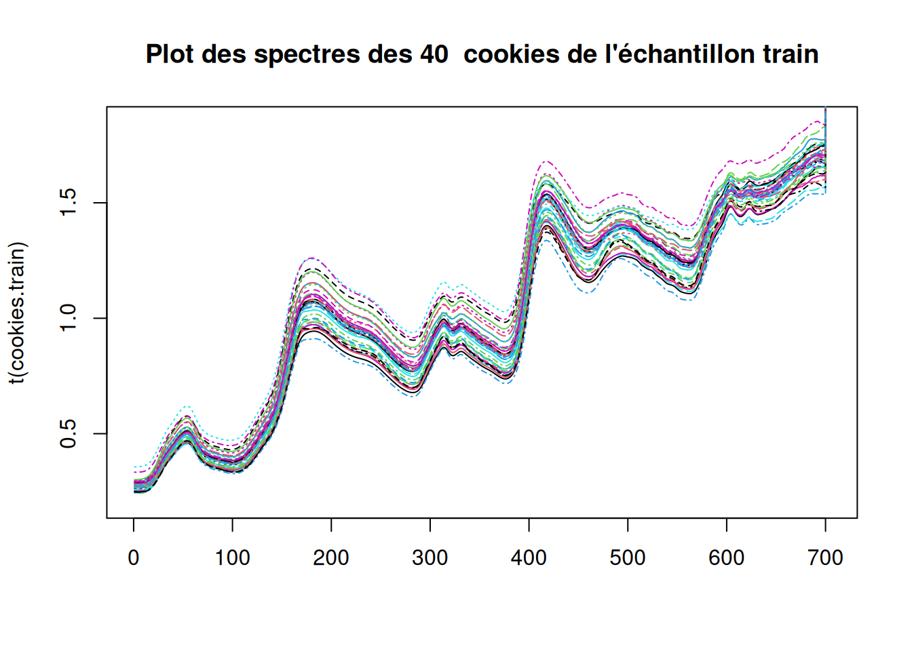
Show the code
dim(t(cookies.train)) [1] 704 40Show the code
# 704 40
# PCA
FactoMineR::PCA(cookies, scale=T, quanti.sup=c(701:704))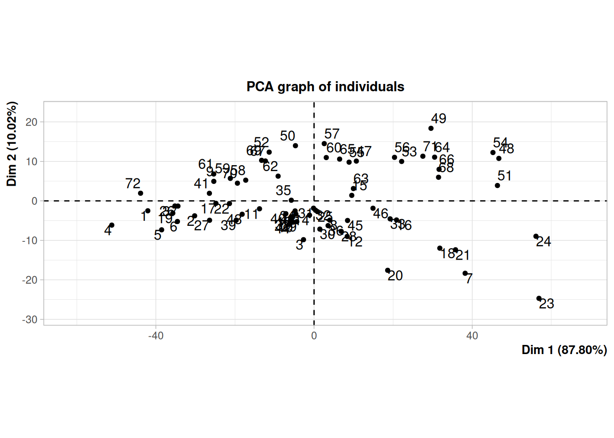
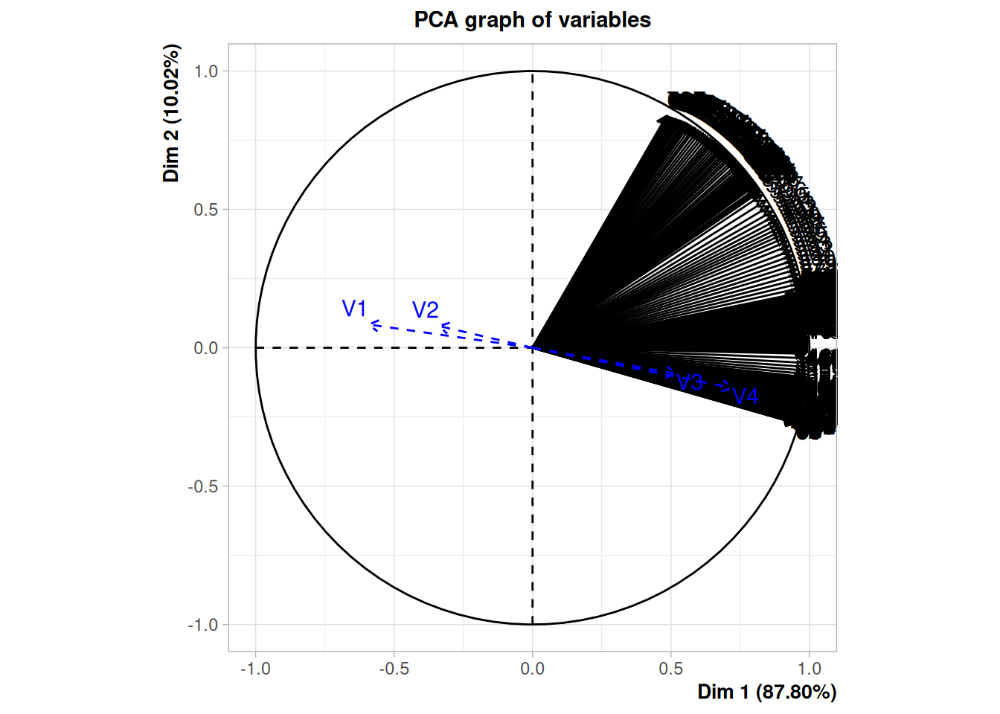
**Results for the Principal Component Analysis (PCA)**
The analysis was performed on 72 individuals, described by 704 variables
*The results are available in the following objects:
name
1 "$eig"
2 "$var"
3 "$var$coord"
4 "$var$cor"
5 "$var$cos2"
6 "$var$contrib"
7 "$ind"
8 "$ind$coord"
9 "$ind$cos2"
10 "$ind$contrib"
11 "$quanti.sup"
12 "$quanti.sup$coord"
13 "$quanti.sup$cor"
14 "$call"
15 "$call$centre"
16 "$call$ecart.type"
17 "$call$row.w"
18 "$call$col.w"
description
1 "eigenvalues"
2 "results for the variables"
3 "coord. for the variables"
4 "correlations variables - dimensions"
5 "cos2 for the variables"
6 "contributions of the variables"
7 "results for the individuals"
8 "coord. for the individuals"
9 "cos2 for the individuals"
10 "contributions of the individuals"
11 "results for the supplementary quantitative variables"
12 "coord. for the supplementary quantitative variables"
13 "correlations suppl. quantitative variables - dimensions"
14 "summary statistics"
15 "mean of the variables"
16 "standard error of the variables"
17 "weights for the individuals"
18 "weights for the variables" Show the code
# Question 2 ------------------------------------------------------------
#### Data prep ####
X.train = as.matrix(cookies.train[,1:700])
y.train = as.matrix(cookies.train[,702])
X.test = as.matrix(cookies.test[,1:700])
y.test = as.matrix(cookies.test[,702])
tab = data.frame(y = y.train, X = X.train)
#### Step Forward (hybride) ####
reg_full = lm(y~.,data = tab)
reg_start = lm(y~1,data = tab)
modforw = step(reg_start,
scope = formula(reg_full),
direction = "both",
k = log(dim(tab)[1]),
trace = 0)
summary(modforw)
Call:
lm(formula = y ~ X.427 + X.489 + X.579 + X.1 + X.699 + X.492,
data = tab)
Residuals:
Min 1Q Median 3Q Max
-2.61160 -0.62962 -0.02921 0.75900 3.07626
Coefficients:
Estimate Std. Error t value Pr(>|t|)
(Intercept) 10.972 5.972 1.837 0.07517 .
X.427 -36.986 15.649 -2.364 0.02414 *
X.489 1326.348 422.106 3.142 0.00353 **
X.579 -181.024 27.102 -6.679 1.33e-07 ***
X.1 58.077 17.975 3.231 0.00279 **
X.699 16.118 4.471 3.605 0.00102 **
X.492 -1134.433 440.535 -2.575 0.01469 *
---
Signif. codes: 0 '***' 0.001 '**' 0.01 '*' 0.05 '.' 0.1 ' ' 1
Residual standard error: 1.264 on 33 degrees of freedom
Multiple R-squared: 0.9116, Adjusted R-squared: 0.8956
F-statistic: 56.75 on 6 and 33 DF, p-value: 5.578e-16Show the code
# Question 3 ------------------------------------------------------------
prev_forw = sqrt(mean((predict(modforw,data.frame(X = X.test)) - y.test)^2))
indexforw = as.numeric(substr(names(modforw$model)[-1],3,10))
prev_forw # 1.669854[1] 1.669854Show the code
indexforw # 427 489 579 1 699 492[1] 427 489 579 1 699 492Show the code
matplot(t(cookies.train), type='l', ylim=c(0.2, 2))
abline(v = indexforw, lwd = 2, col ="red" )
legend("topleft", legend = "forward", col="red", lty = 1, lwd = 2)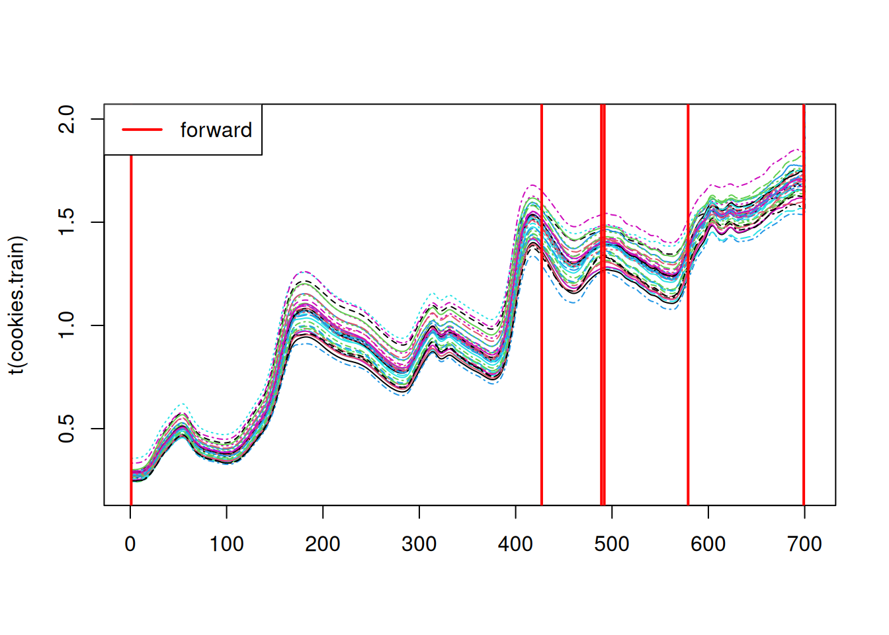
Show the code
# Question 4 ------------------------------------------------------------
#### PCR ####
library(pls)
Attachement du package : 'pls'L'objet suivant est masqué depuis 'package:stats':
loadingsShow the code
pcr.fit = pcr(y.train~X.train,
scale = TRUE,
validation = "CV",
segments = 4)
# K = 4 dans CV car l'echantillon est petit (n=40) donc évitons les k=10
validationplot(pcr.fit)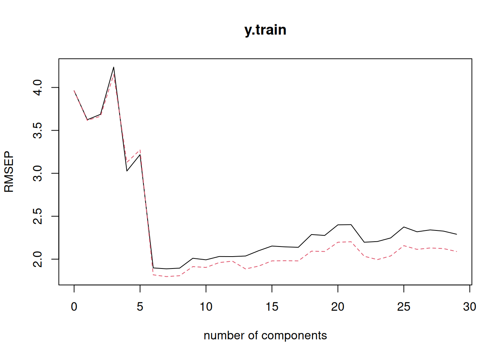
Show the code
M_pcr = which.min(pcr.fit$validation$PRESS)
prev_pcr = sqrt(mean((predict(pcr.fit, cookies.test[,1:700], ncomp = M_pcr) - cookies.test[,702])^2))Warning: 'newdata' avait 32 lignes mais les variables trouvées ont 40 lignesWarning in predict(pcr.fit, cookies.test[, 1:700], ncomp = M_pcr) -
cookies.test[, : la taille d'un objet plus long n'est pas multiple de la taille
d'un objet plus courtShow the code
prev_pcr # 5.917207[1] 5.935859Show the code
# Question 5 ------------------------------------------------------------
#### PLS ####
pls.fit = plsr(y~X.train,
data = tab,
scale = TRUE,
validation = "CV",
segments = 4)
validationplot(pls.fit)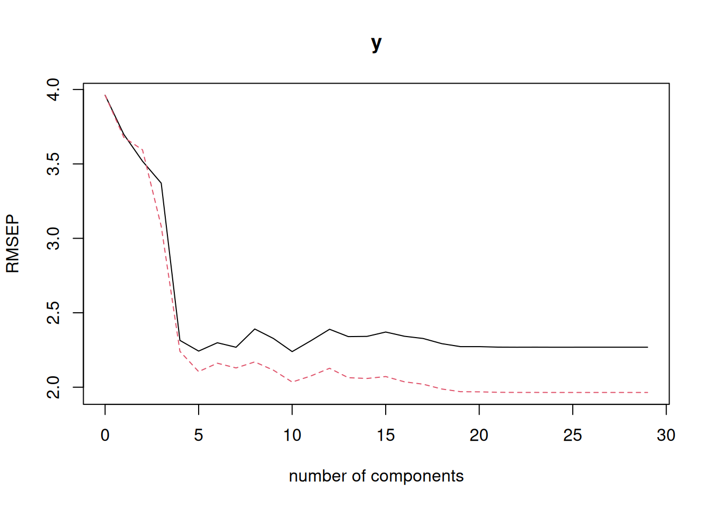
Show the code
M_pls = which.min(pls.fit$validation$PRESS)
prev_pls = sqrt(mean((predict(pls.fit, cookies.test[,1:700], ncomp = M_pls) - cookies.test[,702])^2))Warning: 'newdata' avait 32 lignes mais les variables trouvées ont 40 lignesWarning in predict(pls.fit, cookies.test[, 1:700], ncomp = M_pls) -
cookies.test[, : la taille d'un objet plus long n'est pas multiple de la taille
d'un objet plus courtShow the code
prev_pls # 5.923798[1] 6.032614Show the code
# Question 6 ------------------------------------------------------------
#### Ridge ####
library(glmnet)Loaded glmnet 4.1-8Show the code
cvglm = cv.glmnet(X.train, y.train,
alpha = 0, # alpha = 0 <=> Ridge
nfolds = 4)
plot(cvglm)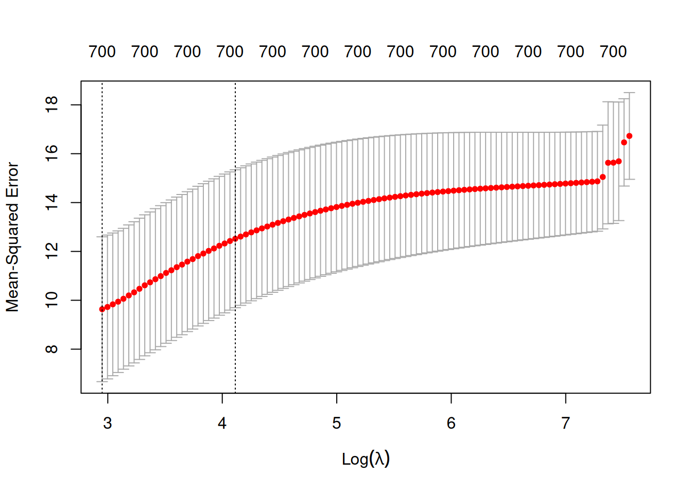
Show the code
# lambda n'a pas été choisi assez petit.
# En effet, on est au bord en terme de min donc il faudrait regarder
# plus petit et zoomer pour voir si on est pas en cas MCO
cvglm$lambda [1] 1912.13994 1825.23023 1742.27070 1663.08180 1587.49217 1515.33820
[7] 1446.46374 1380.71973 1317.96389 1258.06040 1200.87961 1146.29778
[13] 1094.19677 1044.46384 996.99135 951.67655 908.42138 867.13223
[19] 827.71973 790.09859 754.18739 719.90841 687.18746 655.95373
[25] 626.13962 597.68061 570.51510 544.58431 519.83212 496.20494
[31] 473.65166 452.12346 431.57375 411.95806 393.23393 375.36084
[37] 358.30011 342.01482 326.46972 311.63117 297.46705 283.94671
[43] 271.04090 258.72167 246.96237 235.73755 225.02291 214.79527
[49] 205.03250 195.71345 186.81798 178.32681 170.22158 162.48475
[55] 155.09957 148.05005 141.32095 134.89769 128.76638 122.91375
[61] 117.32713 111.99443 106.90411 102.04516 97.40705 92.97975
[67] 88.75367 84.71968 80.86904 77.19342 73.68486 70.33577
[73] 67.13890 64.08733 61.17446 58.39399 55.73989 53.20643
[79] 50.78812 48.47972 46.27624 44.17291 42.16519 40.24871
[85] 38.41935 36.67313 35.00628 33.41519 31.89642 30.44668
[91] 29.06283 27.74188 26.48097 25.27736 24.12847 23.03179
[97] 21.98496 20.98571 20.03188 19.12140Show the code
cvglm = cv.glmnet(X.train, y.train,
alpha = 0,
nfolds = 4,
lambda = seq(0.1, 5, 0.01))
plot(cvglm)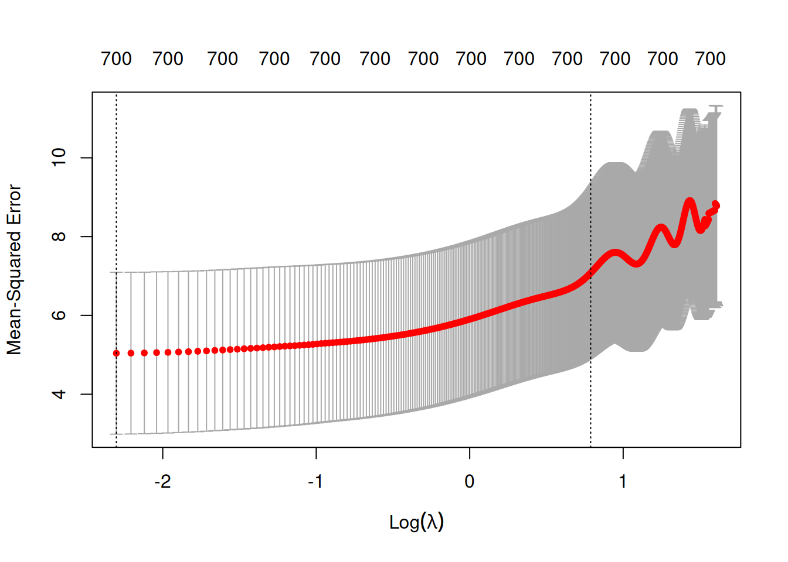
Show the code
# recommencer si choix aberrant
lbda_min_ridge = cvglm$lambda.min
prev_ridge = sqrt(mean((predict(cvglm, newx = X.test, s = lbda_min_ridge) - y.test)^2))
# pas lambda.1se car ecart type trop grand avec n=40
prev_ridge # 0.8743336 mais depend du nfold[1] 0.9352494Show the code
# Question 7 ------------------------------------------------------------
#### Lasso ####
cvglm = cv.glmnet(X.train, y.train,
alpha = 1, # alpha = 1 <=> Lasso
nfolds = 4)
plot(cvglm)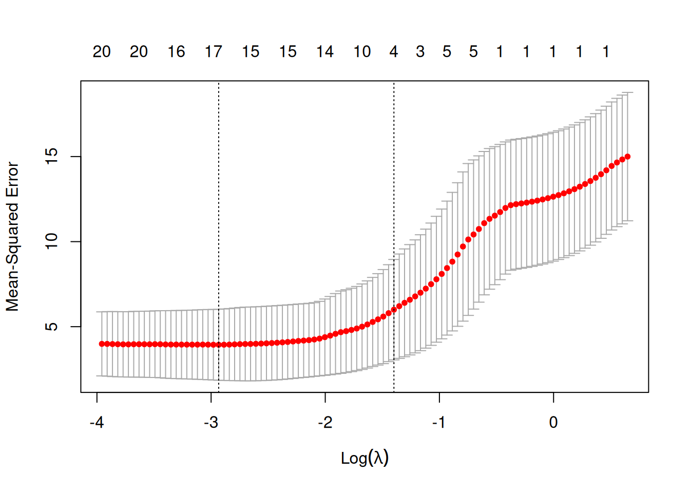
Show the code
# lambda n'a pas été choisi assez petit car
# encore une fois on est proche du bord gauche et bord gauche = MCO
# Attention, on est en log
cvglm$lambda [1] 1.91213994 1.82523023 1.74227070 1.66308180 1.58749217 1.51533820
[7] 1.44646374 1.38071973 1.31796389 1.25806040 1.20087961 1.14629778
[13] 1.09419677 1.04446384 0.99699135 0.95167655 0.90842138 0.86713223
[19] 0.82771973 0.79009859 0.75418739 0.71990841 0.68718746 0.65595373
[25] 0.62613962 0.59768061 0.57051510 0.54458431 0.51983212 0.49620494
[31] 0.47365166 0.45212346 0.43157375 0.41195806 0.39323393 0.37536084
[37] 0.35830011 0.34201482 0.32646972 0.31163117 0.29746705 0.28394671
[43] 0.27104090 0.25872167 0.24696237 0.23573755 0.22502291 0.21479527
[49] 0.20503250 0.19571345 0.18681798 0.17832681 0.17022158 0.16248475
[55] 0.15509957 0.14805005 0.14132095 0.13489769 0.12876638 0.12291375
[61] 0.11732713 0.11199443 0.10690411 0.10204516 0.09740705 0.09297975
[67] 0.08875367 0.08471968 0.08086904 0.07719342 0.07368486 0.07033577
[73] 0.06713890 0.06408733 0.06117446 0.05839399 0.05573989 0.05320643
[79] 0.05078812 0.04847972 0.04627624 0.04417291 0.04216519 0.04024871
[85] 0.03841935 0.03667313 0.03500628 0.03341519 0.03189642 0.03044668
[91] 0.02906283 0.02774188 0.02648097 0.02527736 0.02412847 0.02303179
[97] 0.02198496 0.02098571 0.02003188 0.01912140Show the code
cvglm = cv.glmnet(X.train, y.train,
alpha = 1,
nfolds = 4,
lambda = seq(0.01, 1, 0.001))
plot(cvglm)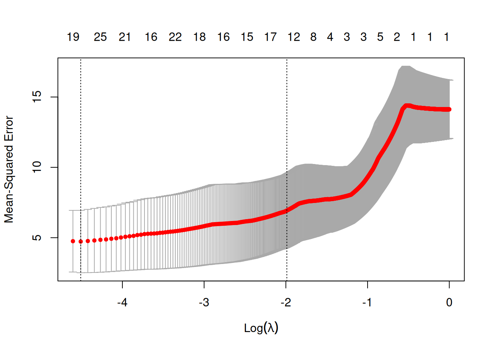
Show the code
# recommencer si choix aberrant
lbda_min_lasso = cvglm$lambda.min
prev_lasso = sqrt(mean((predict(cvglm, newx = X.test, s = lbda_min_lasso) - y.test)^2))
# pas lambda.1se car ecart type trop grand avec n=40
prev_lasso # 1.846122 mais depend du nfold[1] 1.724018Show the code
## Comme on a de la selection de variable, regardons les longeurs d'ondes gardée
# pour comparer avec forward
coeff = coef(cvglm, s=lbda_min_lasso)
indexlasso = which(coeff[-1] != 0)
length(indexlasso)[1] 26Show the code
matplot(t(cookies.train), type='l', ylim=c(0.2, 2))
abline(v = indexforw, lwd = 2, col ="red" )
abline(v = indexlasso, lwd = 2, col ="green" )
legend("topleft", legend = c("forward", "lasso"), col=c("red", "green"), lty = c(1,1), lwd = c(2,2))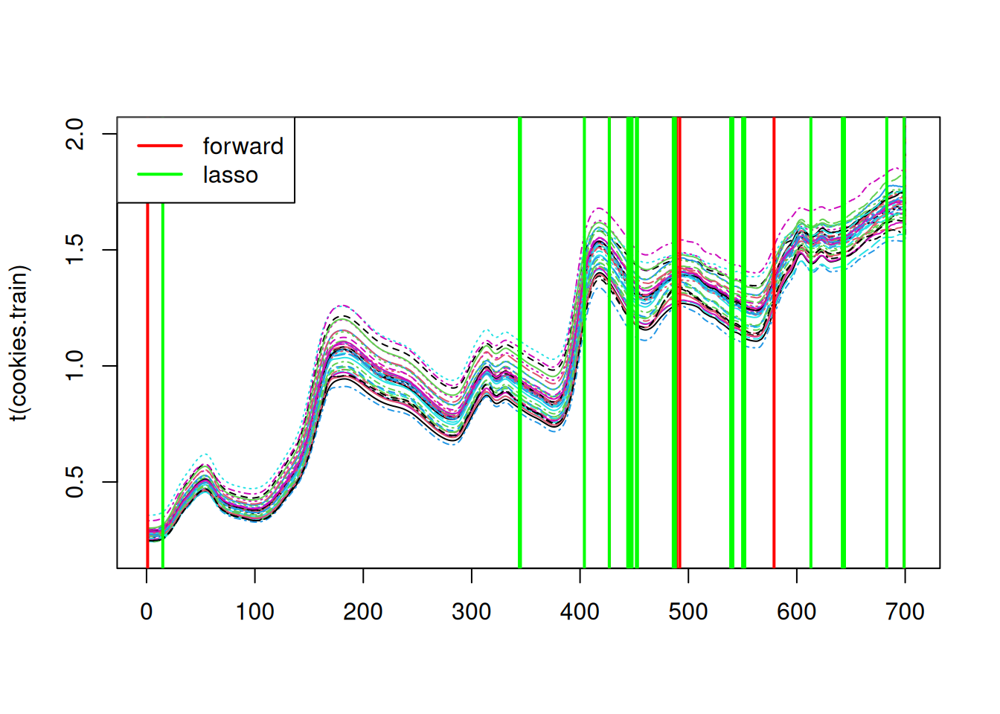
Show the code
# Pour comparer lasso et forward, on peut donc prendre en considération le rmsep
# mais aussi prendre en compte le nombre de variables selectionnées
# Question 8 ------------------------------------------------------------
# Interessant de faire Gauss-Lasso car entre ridge et lasso
# on a un écart de rmsep ou lasso pas forcément meilleur
# donc interssant de tester un entre deux
#### Gauss-Lasso ####
w = coef(cvglm, s = cvglm$lambda.min)
indexlasso = which(w[-1] != 0)
length(indexlasso)[1] 26Show the code
# environ 30 : trop grand /à n=40 pour les MCO, ne marchera pas
reg = lm(y~.,
data = tab[, c(1, indexlasso+1)])
prev_gauss = sqrt(mean((predict(reg, data.frame(X = X.test)) - y.test)^2))
prev_gauss # 1.825471[1] 5.091311Show the code
# Question 9 ------------------------------------------------------------
#### Lasso Adaptative ####
cvglm = cv.glmnet(X.train, y.train,
nfolds = 4,
penalty.factor = 1/abs(w[-1]))
plot(cvglm)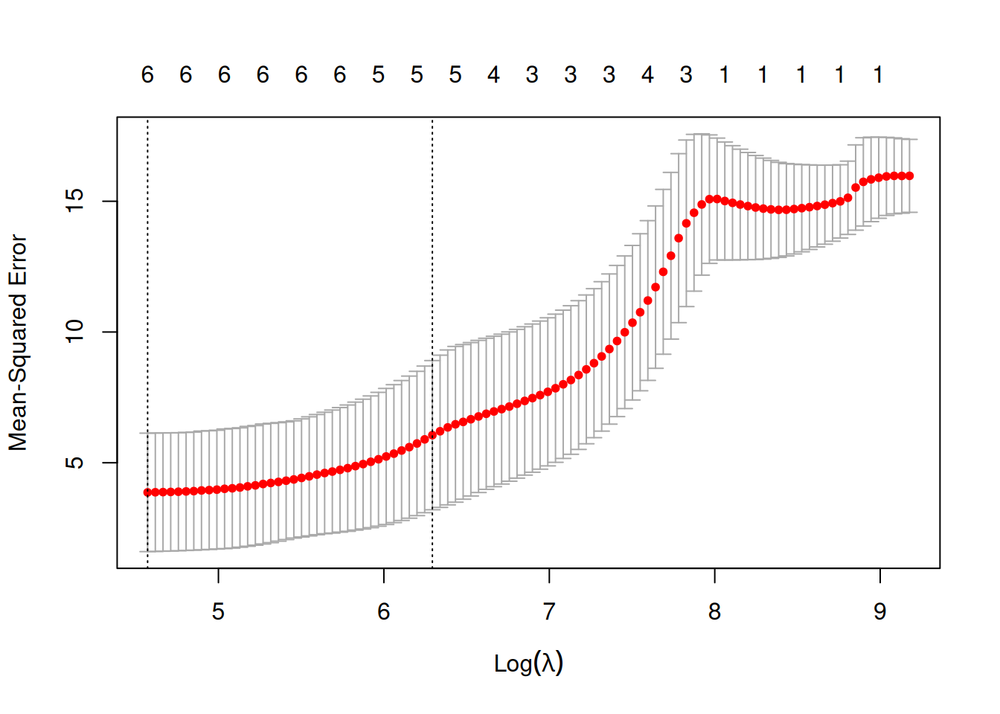
Show the code
cvglm$lambda [1] 9673.65752 9233.97486 8814.27645 8413.65398 8031.24042 7666.20815
[7] 7317.76716 6985.16335 6667.67689 6364.62069 6075.33886 5799.20533
[13] 5535.62250 5284.01991 5043.85305 4814.60214 4595.77105 4386.88616
[19] 4187.49541 3997.16728 3815.48986 3642.06996 3476.53226 3318.51850
[25] 3167.68671 3023.71046 2886.27816 2755.09236 2629.86916 2510.33755
[31] 2396.23883 2287.32608 2183.36358 2084.12633 1989.39958 1898.97830
[37] 1812.66680 1730.27830 1651.63448 1576.56514 1504.90782 1436.50744
[43] 1371.21596 1308.89208 1249.40091 1192.61371 1138.40758 1086.66520
[49] 1037.27459 990.12886 945.12597 902.16854 861.16359 822.02237
[55] 784.66019 748.99617 714.95314 682.45741 651.43867 621.82978
[61] 593.56666 566.58813 540.83583 516.25401 492.78947 470.39142
[67] 449.01141 428.60315 409.12247 390.52722 372.77716 355.83386
[73] 339.66066 324.22256 309.48615 295.41952 281.99225 269.17527
[79] 256.94084 245.26248 234.11492 223.47404 213.31680 203.62122
[85] 194.36632 185.53207 177.09935 169.04991 161.36633 154.03198
[91] 147.03099 140.34821 133.96916 127.88006 122.06771 116.51955
[97] 111.22355 106.16827 101.34276 96.73658Show the code
cvglm = cv.glmnet(X.train, y.train,
alpha = 1,
nfolds = 4,
penalty.factor = 1/abs(w[-1]),
lambda = seq(1, 50, 0.1))
plot(cvglm)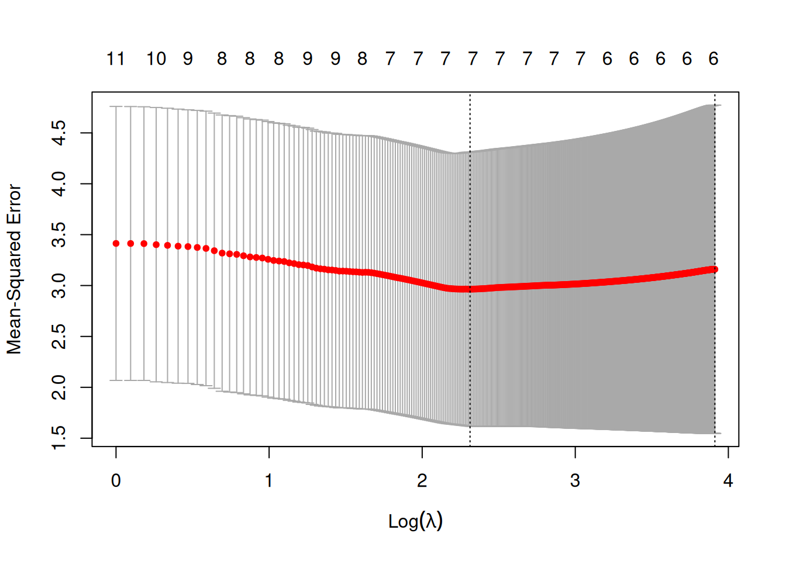
Show the code
lbda_min_alasso = cvglm$lambda.min
prev_alasso = sqrt(mean((predict(cvglm, newx = X.test, s = lbda_min_alasso) - y.test)^2))
prev_alasso # 1.901688 mais depend du nfold[1] 1.958676Show the code
# + Gauss pour finir
wal = coef(cvglm, s = lbda_min_alasso)
indexadlasso = which(wal[-1] != 0)
length(indexadlasso) #9 : on peut essayer gauss[1] 7Show the code
reg=lm(y~.,
data = tab[, c(1, indexadlasso + 1)])
prev_algauss = sqrt(mean((predict(reg,data.frame(X = X.test)) - y.test)^2))
prev_algauss # 2.003703[1] 2.137385Show the code
# Question 10 ------------------------------------------------------------
#### Elastic Net ####
cvglm = cv.glmnet(X.train, y.train,
alpha = 0.5,
nfolds = 4)
plot(cvglm)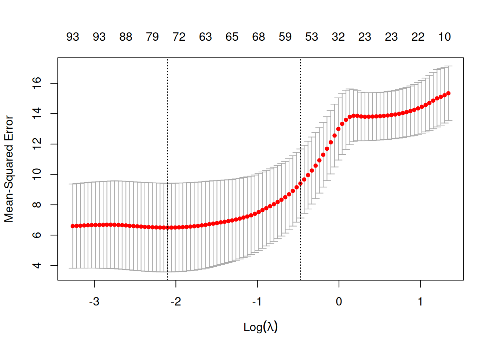
Show the code
# encore une fois, lambda proche du bord gauche donc essayons d'affiner
cvglm$lambda [1] 3.82427988 3.65046045 3.48454139 3.32616361 3.17498434 3.03067640
[7] 2.89292748 2.76143946 2.63592778 2.51612079 2.40175922 2.29259555
[13] 2.18839355 2.08892768 1.99398270 1.90335311 1.81684277 1.73426446
[19] 1.65543947 1.58019719 1.50837479 1.43981682 1.37437493 1.31190747
[25] 1.25227925 1.19536122 1.14103021 1.08916863 1.03966423 0.99240989
[31] 0.94730333 0.90424693 0.86314751 0.82391612 0.78646786 0.75072169
[37] 0.71660023 0.68402964 0.65293944 0.62326233 0.59493410 0.56789342
[43] 0.54208179 0.51744334 0.49392474 0.47147510 0.45004583 0.42959055
[49] 0.41006500 0.39142691 0.37363595 0.35665362 0.34044316 0.32496950
[55] 0.31019913 0.29610010 0.28264190 0.26979539 0.25753277 0.24582751
[61] 0.23465427 0.22398887 0.21380823 0.20409031 0.19481409 0.18595949
[67] 0.17750735 0.16943936 0.16173808 0.15438684 0.14736972 0.14067154
[73] 0.13427780 0.12817467 0.12234893 0.11678798 0.11147979 0.10641286
[79] 0.10157623 0.09695943 0.09255248 0.08834583 0.08433037 0.08049743
[85] 0.07683869 0.07334626 0.07001256 0.06683038 0.06379283 0.06089335
[91] 0.05812565 0.05548375 0.05296193 0.05055473 0.04825694 0.04606359
[97] 0.04396993 0.04197142 0.04006376 0.03824280Show the code
cvglm = cv.glmnet(X.train, y.train,
alpha = 0.5,
nfolds = 4,
lambda = seq(0.001, 1, 0.001))
plot(cvglm)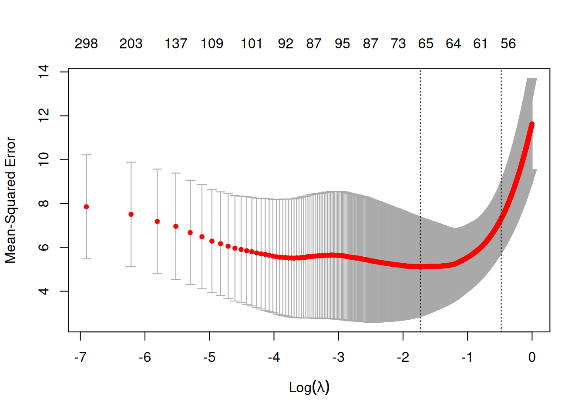
Show the code
lbda_min_en = cvglm$lambda.min
prev_en = sqrt(mean((predict(cvglm, newx = X.test, s = lbda_min_en) - y.test)^2))
prev_en # 2.007716[1] 1.355662Show the code
wen = coef(cvglm, s = lbda_min_en)
indexen = which(wen[-1] != 0)
length(indexen)[1] 68Show the code
prev_list = c(prev_forw, prev_ridge, prev_pcr, prev_pls, prev_lasso, prev_gauss, prev_alasso, prev_algauss, prev_en)
matplot(t(X.train), type='l', ylim = c(-0.2, 2))
points(indexforw, rep(0.2, length(indexforw)), pch = 3, col = "red")
points(indexadlasso, rep(0.1, length(indexadlasso)), pch = 3, col = "cyan")
points(indexlasso, rep(0, length(indexlasso)), pch = 3, col = "deeppink")
points(indexen, rep(-0.1, length(indexen)), pch = 3, col = "purple")
legend("topleft", legend = c("Forward","Adaptative Lasso","Lasso","Elastic Net"), pch = 3, col = c("red", "cyan", "deeppink", "purple"))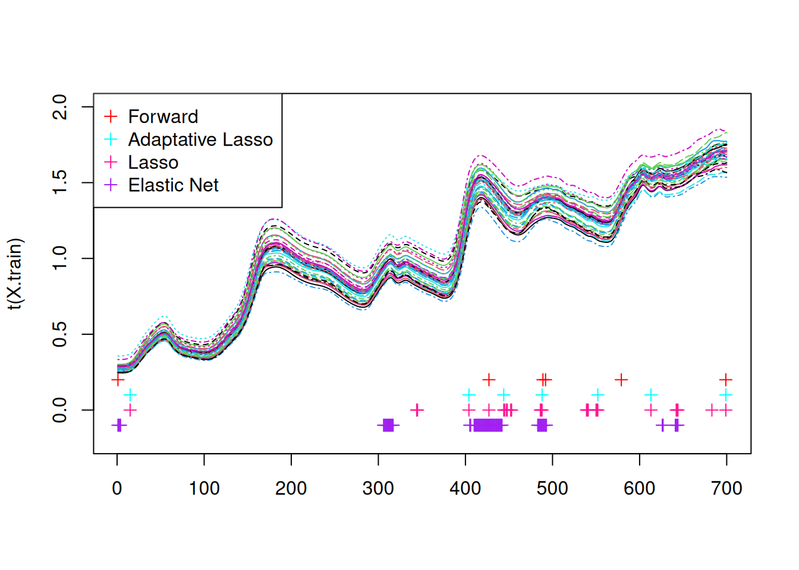
Show the code
## On met des points pour la lisibilité contrairement à une multitude de abline
# Question 11 ------------------------------------------------------------
# Analyser les résultats, à la fois en terme de qualité de prévision
# et d’identification des longueurs d’onde importantes
prev_list[1] 1.6698542 0.9352494 5.9358587 6.0326143 1.7240176 5.0913110 1.9586761
[8] 2.1373851 1.3556622Show the code
# en terme de rmsep (sans compter l'aléa du nfold), on a :
# Ridge, forward, gauss, lasso, alasso, algauss, en
# que l'on gardera (<2.1)
# par contre on pourrait rejeter pcr et pls (>5.5)
# en terme de selection de variables
length(indexforw) # 6[1] 6Show the code
length(indexlasso) # 19[1] 26Show the code
length(indexadlasso) # 8[1] 7Show the code
length(indexen) # 298[1] 68Show the code
# Donc on pourrait enlever Elastic Net qui garde beaucoup de variables
## Conclusion :
# avec ces deux critères, on pourrait avoir une préférence
# pour forward qui garde peut de variable et qui a un rmsep faible
# mais le rmsep le plus faible reste pour ridge
## Concl à revoir car normalement pcr et pls tournent également autour de 1.qqchose
## IDEE :
# faire un dataframe avec nom des methodes et rmsep associé et nb de variables gardées